<!DOCTYPE html>


  <html class="light page-post">


<head><meta name="generator" content="Hexo 3.9.0">
  <meta charset="utf-8">
  
  <title>C语言上机作业 | LittleGhost&#39;s Blog</title>

  <meta name="viewport" content="width=device-width, initial-scale=1, maximum-scale=1">

  
    <meta name="keywords" content="c,">
  

  <meta name="description" content="C语言上机作业整理一下大一上时的练习，当时用的还是ThinkPad L410+XP+VC++6.0，那时的自己还能一边食堂吃午饭一边手机看汇编学习的视频，有点怀念QAQ printf的使用// It&apos;s the first class in college#include&amp;lt;stdio.h&amp;gt;void main()&amp;#123;  printf(&quot;Hello World.\n&quot;);&amp;#125">
<meta name="keywords" content="c">
<meta property="og:type" content="article">
<meta property="og:title" content="C语言上机作业">
<meta property="og:url" content="https://littleghost2016.github.io/2016/01/03/C语言上机作业/index.html">
<meta property="og:site_name" content="LittleGhost&#39;s Blog">
<meta property="og:description" content="C语言上机作业整理一下大一上时的练习，当时用的还是ThinkPad L410+XP+VC++6.0，那时的自己还能一边食堂吃午饭一边手机看汇编学习的视频，有点怀念QAQ printf的使用// It&apos;s the first class in college#include&amp;lt;stdio.h&amp;gt;void main()&amp;#123;  printf(&quot;Hello World.\n&quot;);&amp;#125">
<meta property="og:locale" content="zh-Hans">
<meta property="og:image" content="https://littleghost2016.github.io/2016/01/03/C语言上机作业/clip_image002.jpg">
<meta property="og:image" content="https://littleghost2016.github.io/2016/01/03/C语言上机作业/clip_image001.png">
<meta property="og:image" content="https://littleghost2016.github.io/2016/01/03/C语言上机作业/20151010.png">
<meta property="og:image" content="https://littleghost2016.github.io/2016/01/03/C语言上机作业/1.png">
<meta property="og:image" content="https://littleghost2016.github.io/2016/01/03/C语言上机作业/2.png">
<meta property="og:image" content="https://littleghost2016.github.io/2016/01/03/C语言上机作业/3.png">
<meta property="og:image" content="https://littleghost2016.github.io/2016/01/03/C语言上机作业/4.png">
<meta property="og:image" content="https://littleghost2016.github.io/2016/01/03/C语言上机作业/5.png">
<meta property="og:image" content="https://littleghost2016.github.io/2016/01/03/C语言上机作业/6.png">
<meta property="og:image" content="https://littleghost2016.github.io/2016/01/03/C语言上机作业/7.png">
<meta property="og:image" content="https://littleghost2016.github.io/2016/01/03/C语言上机作业/clip_image001-1586097707043.png">
<meta property="og:image" content="https://littleghost2016.github.io/2016/01/03/C语言上机作业/clip_image002.png">
<meta property="og:image" content="https://littleghost2016.github.io/2016/01/03/C语言上机作业/clip_image003.png">
<meta property="og:image" content="https://littleghost2016.github.io/2016/01/03/C语言上机作业/clip_image004.png">
<meta property="og:image" content="https://littleghost2016.github.io/2016/01/03/C语言上机作业/clip_image001-1586097856539.png">
<meta property="og:image" content="https://littleghost2016.github.io/2016/01/03/C语言上机作业/clip_image002-1586097856539.png">
<meta property="og:image" content="https://littleghost2016.github.io/2016/01/03/C语言上机作业/clip_image004.jpg">
<meta property="og:image" content="https://littleghost2016.github.io/2016/01/03/C语言上机作业/8.png">
<meta property="og:image" content="https://littleghost2016.github.io/2016/01/03/C语言上机作业/clip_image001-1586097954033.png">
<meta property="og:image" content="https://littleghost2016.github.io/2016/01/03/C语言上机作业/clip_image002-1586097965141.jpg">
<meta property="og:image" content="https://littleghost2016.github.io/2016/01/03/C语言上机作业/9.png">
<meta property="og:image" content="https://littleghost2016.github.io/2016/01/03/C语言上机作业/10.png">
<meta property="og:image" content="https://littleghost2016.github.io/2016/01/03/C语言上机作业/11.png">
<meta property="og:image" content="https://littleghost2016.github.io/2016/01/03/C语言上机作业/12.png">
<meta property="og:image" content="https://littleghost2016.github.io/2016/01/03/C语言上机作业/13.png">
<meta property="og:image" content="https://littleghost2016.github.io/2016/01/03/C语言上机作业/14.png">
<meta property="og:image" content="https://littleghost2016.github.io/2016/01/03/C语言上机作业/15.png">
<meta property="og:image" content="https://littleghost2016.github.io/2016/01/03/C语言上机作业/16.png">
<meta property="og:image" content="https://littleghost2016.github.io/2016/01/03/C语言上机作业/17.png">
<meta property="og:image" content="https://littleghost2016.github.io/2016/01/03/C语言上机作业/clip_image001-1586098644743.png">
<meta property="og:image" content="https://littleghost2016.github.io/2016/01/03/C语言上机作业/18.png">
<meta property="og:image" content="https://littleghost2016.github.io/2016/01/03/C语言上机作业/clip_image001-1586098733205.png">
<meta property="og:image" content="https://littleghost2016.github.io/2016/01/03/C语言上机作业/clip_image001-1586098779362.png">
<meta property="og:image" content="https://littleghost2016.github.io/2016/01/03/C语言上机作业/clip_image001-1586098798532.png">
<meta property="og:image" content="https://littleghost2016.github.io/2016/01/03/C语言上机作业/clip_image001-1586098983555.png">
<meta property="og:image" content="https://littleghost2016.github.io/2016/01/03/C语言上机作业/clip_image002-1586098983555.png">
<meta property="og:image" content="https://littleghost2016.github.io/2016/01/03/C语言上机作业/clip_image003-1586098983555.png">
<meta property="og:image" content="https://littleghost2016.github.io/2016/01/03/C语言上机作业/19.png">
<meta property="og:image" content="https://littleghost2016.github.io/2016/01/03/C语言上机作业/clip_image001-1586099144595.png">
<meta property="og:image" content="https://littleghost2016.github.io/2016/01/03/C语言上机作业/clip_image001-1586099175197.png">
<meta property="og:image" content="https://littleghost2016.github.io/2016/01/03/C语言上机作业/clip_image001-1586099226782.png">
<meta property="og:image" content="https://littleghost2016.github.io/2016/01/03/C语言上机作业/clip_image002-1586099238066.jpg">
<meta property="og:image" content="https://littleghost2016.github.io/2016/01/03/C语言上机作业/clip_image001.jpg">
<meta property="og:image" content="https://littleghost2016.github.io/2016/01/03/C语言上机作业/clip_image001-1586099341294.png">
<meta property="og:image" content="https://littleghost2016.github.io/2016/01/03/C语言上机作业/clip_image003-1586099341294.png">
<meta property="og:image" content="https://littleghost2016.github.io/2016/01/03/C语言上机作业/clip_image002-1586099341294.png">
<meta property="og:image" content="https://littleghost2016.github.io/2016/01/03/C语言上机作业/clip_image001-1586099547382.png">
<meta property="og:image" content="https://littleghost2016.github.io/2016/01/03/C语言上机作业/clip_image002-1586099547382.png">
<meta property="og:updated_time" content="2020-04-05T15:21:49.817Z">
<meta name="twitter:card" content="summary">
<meta name="twitter:title" content="C语言上机作业">
<meta name="twitter:description" content="C语言上机作业整理一下大一上时的练习，当时用的还是ThinkPad L410+XP+VC++6.0，那时的自己还能一边食堂吃午饭一边手机看汇编学习的视频，有点怀念QAQ printf的使用// It&apos;s the first class in college#include&amp;lt;stdio.h&amp;gt;void main()&amp;#123;  printf(&quot;Hello World.\n&quot;);&amp;#125">
<meta name="twitter:image" content="https://littleghost2016.github.io/2016/01/03/C语言上机作业/clip_image002.jpg">

  

  
    <link rel="icon" href="https://avatars2.githubusercontent.com/u/22980536?s=460&v=4">
  

  <link href="/css/styles.css?v=c114cbeddx" rel="stylesheet">


  
    <link rel="stylesheet" href="/css/personal-style.css">
  

  

  

  


  
    <script async src="https://busuanzi.ibruce.info/busuanzi/2.3/busuanzi.pure.mini.js"></script>
    <link rel="stylesheet" href="//cdn.bootcss.com/font-awesome/4.3.0/css/font-awesome.min.css">
  

</head>
</html>
<body>


  
    <span id="toolbox-mobile" class="toolbox-mobile">盒子</span>
  

  <div class="post-header CENTER">
   
  <div class="toolbox">
    <a class="toolbox-entry" href="/">
      <span class="toolbox-entry-text">盒子</span>
      <i class="icon-angle-down"></i>
      <i class="icon-home"></i>
    </a>
    <ul class="list-toolbox">
      
        <li class="item-toolbox">
          <a
            class="CIRCLE"
            href="/archives/"
            rel="noopener noreferrer"
            target="_self"
            >
            文章
          </a>
        </li>
      
        <li class="item-toolbox">
          <a
            class="CIRCLE"
            href="/category/"
            rel="noopener noreferrer"
            target="_self"
            >
            分类
          </a>
        </li>
      
        <li class="item-toolbox">
          <a
            class="CIRCLE"
            href="/tag/"
            rel="noopener noreferrer"
            target="_self"
            >
            标签
          </a>
        </li>
      
        <li class="item-toolbox">
          <a
            class="CIRCLE"
            href="/link/"
            rel="noopener noreferrer"
            target="_self"
            >
            友链
          </a>
        </li>
      
        <li class="item-toolbox">
          <a
            class="CIRCLE"
            href="/about/"
            rel="noopener noreferrer"
            target="_self"
            >
            关于我
          </a>
        </li>
      
        <li class="item-toolbox">
          <a
            class="CIRCLE"
            href="/search/"
            rel="noopener noreferrer"
            target="_self"
            >
            搜索
          </a>
        </li>
      
    </ul>
  </div>


</div>


  <div id="toc" class="toc-article">
    <strong class="toc-title">文章目录</strong>
    <ol class="toc"><li class="toc-item toc-level-1"><a class="toc-link" href="#C语言上机作业"><span class="toc-text">C语言上机作业</span></a></li><li class="toc-item toc-level-1"><a class="toc-link" href="#printf的使用"><span class="toc-text">printf的使用</span></a></li><li class="toc-item toc-level-1"><a class="toc-link" href="#printf的使用2"><span class="toc-text">printf的使用2</span></a></li><li class="toc-item toc-level-1"><a class="toc-link" href="#理解i-和-i"><span class="toc-text">理解i++和++i</span></a></li><li class="toc-item toc-level-1"><a class="toc-link" href="#学习scanf和math-h"><span class="toc-text">学习scanf和math.h</span></a></li><li class="toc-item toc-level-1"><a class="toc-link" href="#学习单个字符输出函数putchar（2015-9-24）"><span class="toc-text">学习单个字符输出函数putchar（2015.9.24）</span></a></li><li class="toc-item toc-level-1"><a class="toc-link" href="#作业（2015-10-10）"><span class="toc-text">作业（2015.10.10）</span></a><ol class="toc-child"><li class="toc-item toc-level-2"><a class="toc-link" href="#分开一个两位数的十位和个位"><span class="toc-text">分开一个两位数的十位和个位</span></a></li><li class="toc-item toc-level-2"><a class="toc-link" href="#printf的进阶使用"><span class="toc-text">printf的进阶使用</span></a></li></ol></li><li class="toc-item toc-level-1"><a class="toc-link" href="#if（和else）条件的使用（2015-10-15）"><span class="toc-text">if（和else）条件的使用（2015.10.15）</span></a><ol class="toc-child"><li class="toc-item toc-level-2"><a class="toc-link" href="#一"><span class="toc-text">一</span></a></li><li class="toc-item toc-level-2"><a class="toc-link" href="#二、根据学生成绩分等级"><span class="toc-text">二、根据学生成绩分等级</span></a></li><li class="toc-item toc-level-2"><a class="toc-link" href="#三个程序的比较"><span class="toc-text">三个程序的比较</span></a></li></ol></li><li class="toc-item toc-level-1"><a class="toc-link" href="#作业【2015-10-17】"><span class="toc-text">作业【2015.10.17】</span></a><ol class="toc-child"><li class="toc-item toc-level-2"><a class="toc-link" href="#解一元二次方程"><span class="toc-text">解一元二次方程</span></a></li><li class="toc-item toc-level-2"><a class="toc-link" href="#switch菜单-n的阶乘"><span class="toc-text">switch菜单+n的阶乘</span></a></li><li class="toc-item toc-level-2"><a class="toc-link" href="#N的阶加"><span class="toc-text">N的阶加</span></a></li><li class="toc-item toc-level-2"><a class="toc-link" href="#显示1-10的平方数"><span class="toc-text">显示1-10的平方数</span></a></li></ol></li><li class="toc-item toc-level-1"><a class="toc-link" href="#作业【2015-10-25】"><span class="toc-text">作业【2015.10.25】</span></a><ol class="toc-child"><li class="toc-item toc-level-2"><a class="toc-link" href="#十进制转十六进制"><span class="toc-text">十进制转十六进制</span></a></li><li class="toc-item toc-level-2"><a class="toc-link" href="#扑克牌洗牌"><span class="toc-text">扑克牌洗牌</span></a></li></ol></li><li class="toc-item toc-level-1"><a class="toc-link" href="#函数【2015-11-5】"><span class="toc-text">函数【2015.11.5】</span></a><ol class="toc-child"><li class="toc-item toc-level-2"><a class="toc-link" href="#strcmp字符串比较函数"><span class="toc-text">strcmp字符串比较函数</span></a></li><li class="toc-item toc-level-2"><a class="toc-link" href="#strcpy字符串拷贝函数"><span class="toc-text">strcpy字符串拷贝函数</span></a></li><li class="toc-item toc-level-2"><a class="toc-link" href="#strcat字符串连接函数"><span class="toc-text">strcat字符串连接函数</span></a></li><li class="toc-item toc-level-2"><a class="toc-link" href="#strlen字符串长度测试函数"><span class="toc-text">strlen字符串长度测试函数</span></a></li><li class="toc-item toc-level-2"><a class="toc-link" href="#strlwr字符串转换函数（大转小）"><span class="toc-text">strlwr字符串转换函数（大转小）</span></a></li><li class="toc-item toc-level-2"><a class="toc-link" href="#strupr字符串转换函数（小转大）"><span class="toc-text">strupr字符串转换函数（小转大）</span></a></li></ol></li><li class="toc-item toc-level-1"><a class="toc-link" href="#大小写字符转换【2015-11-12】"><span class="toc-text">大小写字符转换【2015.11.12】</span></a><ol class="toc-child"><li class="toc-item toc-level-2"><a class="toc-link" href="#V1-0"><span class="toc-text">V1.0</span></a></li><li class="toc-item toc-level-2"><a class="toc-link" href="#V2-0"><span class="toc-text">V2.0</span></a></li></ol></li><li class="toc-item toc-level-1"><a class="toc-link" href="#作业【2015-11-16】"><span class="toc-text">作业【2015.11.16】</span></a><ol class="toc-child"><li class="toc-item toc-level-2"><a class="toc-link" href="#Dir"><span class="toc-text">Dir</span></a></li><li class="toc-item toc-level-2"><a class="toc-link" href="#Path"><span class="toc-text">Path</span></a></li><li class="toc-item toc-level-2"><a class="toc-link" href="#include中的-lt-gt-和””的区别"><span class="toc-text">#include中的&lt;&gt;和””的区别</span></a></li><li class="toc-item toc-level-2"><a class="toc-link" href="#Stdio-h"><span class="toc-text">Stdio.h</span></a></li></ol></li><li class="toc-item toc-level-1"><a class="toc-link" href="#交换两个变量的值【2015-11-22】"><span class="toc-text">交换两个变量的值【2015.11.22】</span></a><ol class="toc-child"><li class="toc-item toc-level-2"><a class="toc-link" href="#指针-引用temp"><span class="toc-text">指针-引用temp</span></a></li><li class="toc-item toc-level-2"><a class="toc-link" href="#异或"><span class="toc-text">异或</span></a></li><li class="toc-item toc-level-2"><a class="toc-link" href="#引用传递"><span class="toc-text">引用传递</span></a></li></ol></li><li class="toc-item toc-level-1"><a class="toc-link" href="#多种方法输出及查看内存和值【2015-11-26】"><span class="toc-text">多种方法输出及查看内存和值【2015.11.26】</span></a><ol class="toc-child"><li class="toc-item toc-level-2"><a class="toc-link" href="#多种方法输出hellp-world"><span class="toc-text">多种方法输出hellp world</span></a></li><li class="toc-item toc-level-2"><a class="toc-link" href="#查看内存和值"><span class="toc-text">查看内存和值</span></a></li></ol></li><li class="toc-item toc-level-1"><a class="toc-link" href="#dos常用命令"><span class="toc-text">dos常用命令</span></a><ol class="toc-child"><li class="toc-item toc-level-2"><a class="toc-link" href="#DIR"><span class="toc-text">DIR</span></a></li><li class="toc-item toc-level-2"><a class="toc-link" href="#taskkill"><span class="toc-text">taskkill</span></a></li></ol></li><li class="toc-item toc-level-1"><a class="toc-link" href="#字典程序"><span class="toc-text">字典程序</span></a><ol class="toc-child"><li class="toc-item toc-level-2"><a class="toc-link" href="#V1-0【2015-12-3】"><span class="toc-text">V1.0【2015.12.3】</span></a></li><li class="toc-item toc-level-2"><a class="toc-link" href="#V2-0（带结构体）【2015-12-10】"><span class="toc-text">V2.0（带结构体）【2015.12.10】</span></a></li><li class="toc-item toc-level-2"><a class="toc-link" href="#V3-0（有待修改）"><span class="toc-text">V3.0（有待修改）</span></a></li></ol></li></ol>
  </div>


<div class="content content-post CENTER">
   <article id="post-C语言上机作业" class="article article-type-post" itemprop="blogPost">
  <header class="article-header">
    <h1 class="post-title">C语言上机作业</h1>

    <div class="article-meta">
      <span>
        <i class="icon-calendar"></i>
        <span>2016.01.03</span>
      </span>

      
        <span class="article-author">
          <i class="icon-user"></i>
          <span>LittleGhost</span>
        </span>
      

      
  <span class="article-category">
    <i class="icon-list"></i>
    <a class="article-category-link" href="/categories/技术/">技术</a>
  </span>


      

      
      <i class="fa fa-eye"></i> 
        <span id="busuanzi_container_page_pv">
           &nbsp热度 <span id="busuanzi_value_page_pv">
           <i class="fa fa-spinner fa-spin"></i></span>℃
        </span>
      
      
    </div>
  </header>

  <div class="article-content">
    
      <h1 id="C语言上机作业"><a href="#C语言上机作业" class="headerlink" title="C语言上机作业"></a>C语言上机作业</h1><p>整理一下大一上时的练习，当时用的还是<code>ThinkPad L410</code>+<code>XP</code>+<code>VC++6.0</code>，那时的自己还能一边食堂吃午饭一边手机看汇编学习的视频，有点怀念QAQ</p>
<h1 id="printf的使用"><a href="#printf的使用" class="headerlink" title="printf的使用"></a>printf的使用</h1><figure class="highlight c++"><table><tr><td class="code"><pre><span class="line"><span class="comment">// It's the first class in college</span></span><br><span class="line"><span class="meta">#<span class="meta-keyword">include</span><span class="meta-string">&lt;stdio.h&gt;</span></span></span><br><span class="line"></span><br><span class="line"><span class="function"><span class="keyword">void</span> <span class="title">main</span><span class="params">()</span></span></span><br><span class="line"><span class="function"></span>&#123;</span><br><span class="line">  <span class="built_in">printf</span>(<span class="string">"Hello World.\n"</span>);</span><br><span class="line">&#125;</span><br><span class="line"></span><br><span class="line"><span class="comment">// 第一次stdio.h打错了</span></span><br><span class="line"><span class="comment">// 知道还有”math.h””string.h”</span></span><br><span class="line"><span class="comment">// #include 表示引用头文件</span></span><br><span class="line"><span class="comment">// 如”stdio.h”中包括标准的输入输出函数</span></span><br></pre></td></tr></table></figure>

<h1 id="printf的使用2"><a href="#printf的使用2" class="headerlink" title="printf的使用2"></a>printf的使用2</h1><figure class="highlight c++"><table><tr><td class="code"><pre><span class="line"><span class="meta">#<span class="meta-keyword">include</span><span class="meta-string">&lt;stdio.h&gt;</span></span></span><br><span class="line"><span class="function"><span class="keyword">void</span> <span class="title">main</span><span class="params">()</span></span></span><br><span class="line"><span class="function"></span>&#123;</span><br><span class="line">  <span class="keyword">int</span> number;</span><br><span class="line">  <span class="keyword">float</span> amount;</span><br><span class="line">  number=<span class="number">100</span>;</span><br><span class="line">  amount=<span class="number">30.75</span>+<span class="number">70.35</span>;</span><br><span class="line">  <span class="built_in">printf</span>(<span class="string">"%d\n"</span>,number);</span><br><span class="line">  <span class="built_in">printf</span>(<span class="string">"%5.2f"</span>,amount);</span><br><span class="line">&#125;</span><br></pre></td></tr></table></figure>

<h1 id="理解i-和-i"><a href="#理解i-和-i" class="headerlink" title="理解i++和++i"></a>理解i++和++i</h1><figure class="highlight c++"><table><tr><td class="code"><pre><span class="line"><span class="meta">#<span class="meta-keyword">include</span><span class="meta-string">&lt;stdio.h&gt;</span></span></span><br><span class="line"></span><br><span class="line"><span class="function"><span class="keyword">void</span> <span class="title">main</span><span class="params">()</span></span></span><br><span class="line"><span class="function"></span>&#123;</span><br><span class="line">  <span class="keyword">int</span> x,y;</span><br><span class="line">  x=<span class="number">10</span>;</span><br><span class="line">  y=++x;</span><br><span class="line"><span class="built_in">printf</span>(<span class="string">"x=%d,y=%d\n"</span>,x,y);</span><br><span class="line">&#125;</span><br><span class="line"></span><br><span class="line"><span class="comment">//（++i先自加后运算）</span></span><br></pre></td></tr></table></figure>

<h1 id="学习scanf和math-h"><a href="#学习scanf和math-h" class="headerlink" title="学习scanf和math.h"></a>学习scanf和math.h</h1><figure class="highlight c++"><table><tr><td class="code"><pre><span class="line"><span class="meta">#<span class="meta-keyword">include</span><span class="meta-string">&lt;stdio.h&gt;</span></span></span><br><span class="line"><span class="meta">#<span class="meta-keyword">include</span><span class="meta-string">&lt;math.h&gt;</span></span></span><br><span class="line"></span><br><span class="line">main()</span><br><span class="line">&#123;</span><br><span class="line">  <span class="built_in">scanf</span>(<span class="string">"%d"</span>,a);</span><br><span class="line">  <span class="keyword">char</span> a;</span><br><span class="line">  <span class="keyword">int</span> b=<span class="number">2</span>,c=<span class="number">3</span>,d=<span class="number">0</span>;</span><br><span class="line">  d=a*b*c;</span><br><span class="line">  <span class="built_in">printf</span>(<span class="string">"%d\n"</span>,d);</span><br><span class="line">&#125;</span><br><span class="line"></span><br><span class="line"><span class="comment">// （scanf在调试时容易忘记输入...）</span></span><br><span class="line"><span class="comment">// （a乘b乘c要使用”*”符号，不能像数学计算中一样省略，此处不能省略）</span></span><br></pre></td></tr></table></figure>

<h1 id="学习单个字符输出函数putchar（2015-9-24）"><a href="#学习单个字符输出函数putchar（2015-9-24）" class="headerlink" title="学习单个字符输出函数putchar（2015.9.24）"></a>学习单个字符输出函数putchar（2015.9.24）</h1><figure class="highlight c++"><table><tr><td class="code"><pre><span class="line"><span class="comment">//3.4 数据输出</span></span><br><span class="line"><span class="meta">#<span class="meta-keyword">include</span><span class="meta-string">&lt;stdio.h&gt;</span></span></span><br><span class="line"></span><br><span class="line">main()</span><br><span class="line">&#123;</span><br><span class="line">	<span class="keyword">char</span> a,b;</span><br><span class="line">	a=<span class="string">'b'</span>;b=<span class="string">'o'</span>;</span><br><span class="line">	<span class="built_in">putchar</span>(a);<span class="built_in">putchar</span>(b);</span><br><span class="line">	<span class="built_in">putchar</span>(<span class="string">'y'</span>);<span class="built_in">putchar</span>(<span class="string">'\n'</span>);</span><br><span class="line">&#125;</span><br><span class="line"></span><br><span class="line"><span class="comment">// （括号内可以是字符常量，也可以是整型变量，此时仅输出低字节所代表的字符）</span></span><br></pre></td></tr></table></figure>

<h1 id="作业（2015-10-10）"><a href="#作业（2015-10-10）" class="headerlink" title="作业（2015.10.10）"></a>作业（2015.10.10）</h1><h2 id="分开一个两位数的十位和个位"><a href="#分开一个两位数的十位和个位" class="headerlink" title="分开一个两位数的十位和个位"></a>分开一个两位数的十位和个位</h2><figure class="highlight c++"><table><tr><td class="code"><pre><span class="line"><span class="meta">#<span class="meta-keyword">include</span><span class="meta-string">&lt;stdio.h&gt;</span></span></span><br><span class="line"></span><br><span class="line"><span class="function"><span class="keyword">void</span> <span class="title">main</span><span class="params">()</span></span></span><br><span class="line"><span class="function"></span>&#123;</span><br><span class="line">	<span class="keyword">int</span> a,b,c;</span><br><span class="line">	<span class="built_in">puts</span>(<span class="string">"输入一个两位数"</span>);</span><br><span class="line">  <span class="built_in">scanf</span>(<span class="string">"%d"</span>,&amp;a);</span><br><span class="line">	b=a/<span class="number">10</span>;</span><br><span class="line">	c=a-b*<span class="number">10</span>;</span><br><span class="line">	<span class="built_in">printf</span>(<span class="string">"该数字的十位是%d,个位是%d\n"</span>,b,c);</span><br><span class="line">&#125;</span><br></pre></td></tr></table></figure>

<p>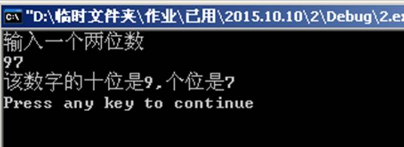</p>
<h2 id="printf的进阶使用"><a href="#printf的进阶使用" class="headerlink" title="printf的进阶使用"></a>printf的进阶使用</h2><figure class="highlight c++"><table><tr><td class="code"><pre><span class="line"><span class="meta">#<span class="meta-keyword">include</span><span class="meta-string">&lt;stdio.h&gt;</span></span></span><br><span class="line"></span><br><span class="line">main()</span><br><span class="line">&#123;	<span class="keyword">unsigned</span> <span class="keyword">double</span> a;</span><br><span class="line">	<span class="built_in">scanf</span>(<span class="string">"%d"</span>,&amp;a);</span><br><span class="line">	<span class="built_in">printf</span>(<span class="string">"%d\n"</span>,<span class="number">10</span>*a);</span><br><span class="line">&#125;</span><br></pre></td></tr></table></figure>

<p>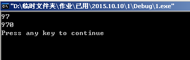</p>
<figure class="highlight c++"><table><tr><td class="code"><pre><span class="line"><span class="comment">// &lt;把“double”前的“unsigned”去掉（有符号变无符号）&gt;</span></span><br><span class="line"><span class="meta">#<span class="meta-keyword">include</span><span class="meta-string">&lt;stdio.h&gt;</span></span></span><br><span class="line"></span><br><span class="line">main()</span><br><span class="line">&#123;	<span class="keyword">double</span> a;</span><br><span class="line">	<span class="built_in">scanf</span>(<span class="string">"%d"</span>,&amp;a);</span><br><span class="line">	<span class="built_in">printf</span>(<span class="string">"%d\n"</span>,<span class="number">10</span>*a);</span><br><span class="line">&#125;</span><br></pre></td></tr></table></figure>

<p>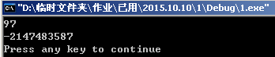</p>
<h1 id="if（和else）条件的使用（2015-10-15）"><a href="#if（和else）条件的使用（2015-10-15）" class="headerlink" title="if（和else）条件的使用（2015.10.15）"></a>if（和else）条件的使用（2015.10.15）</h1><h2 id="一"><a href="#一" class="headerlink" title="一"></a>一</h2><figure class="highlight c++"><table><tr><td class="code"><pre><span class="line"><span class="meta">#<span class="meta-keyword">include</span><span class="meta-string">&lt;stdio.h&gt;</span></span></span><br><span class="line"></span><br><span class="line"><span class="function"><span class="keyword">void</span> <span class="title">main</span><span class="params">()</span></span></span><br><span class="line"><span class="function"></span>&#123;</span><br><span class="line">	<span class="keyword">int</span> x,y;</span><br><span class="line">	<span class="built_in">scanf</span>(<span class="string">"%d"</span>,&amp;x);</span><br><span class="line">	<span class="keyword">if</span>(x&lt;<span class="number">-5</span>)</span><br><span class="line">		y=x;</span><br><span class="line">	  <span class="keyword">else</span> <span class="keyword">if</span>(x&gt;=<span class="number">-5</span>&amp;&amp;x&lt;<span class="number">1</span>)</span><br><span class="line">	    y=<span class="number">2</span>*x+<span class="number">5</span>;</span><br><span class="line">	  <span class="keyword">else</span> <span class="keyword">if</span>(x&gt;=<span class="number">1</span>&amp;&amp;x&lt;<span class="number">4</span>)</span><br><span class="line">	    y=x+<span class="number">6</span>;</span><br><span class="line">	<span class="keyword">else</span> y=<span class="number">3</span>*x<span class="number">-2</span>;</span><br><span class="line">	<span class="built_in">printf</span>(<span class="string">"%d\n"</span>,y);</span><br><span class="line"></span><br><span class="line">&#125;</span><br></pre></td></tr></table></figure>

<p>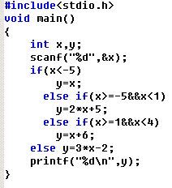</p>
<p>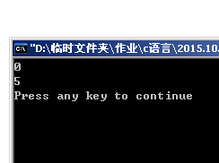</p>
<h2 id="二、根据学生成绩分等级"><a href="#二、根据学生成绩分等级" class="headerlink" title="二、根据学生成绩分等级"></a>二、根据学生成绩分等级</h2><figure class="highlight c++"><table><tr><td class="code"><pre><span class="line"><span class="meta">#<span class="meta-keyword">include</span><span class="meta-string">&lt;stdio.h&gt;</span></span></span><br><span class="line"></span><br><span class="line"><span class="function"><span class="keyword">void</span> <span class="title">main</span><span class="params">()</span></span></span><br><span class="line"><span class="function"></span>&#123;</span><br><span class="line">	<span class="keyword">int</span> a,b;</span><br><span class="line">	<span class="built_in">scanf</span>(<span class="string">"%d"</span>,&amp;a);</span><br><span class="line">	<span class="keyword">if</span>(a&lt;<span class="number">0</span>||a&gt;<span class="number">100</span>) b=<span class="number">1</span>;</span><br><span class="line">	<span class="keyword">if</span>(a&gt;=<span class="number">0</span>&amp;&amp;a&lt;<span class="number">60</span>) b=<span class="number">2</span>;</span><br><span class="line">	<span class="keyword">if</span>(a&gt;=<span class="number">60</span>&amp;&amp;a&lt;<span class="number">70</span>) b=<span class="number">3</span>;</span><br><span class="line">	<span class="keyword">if</span>(a&gt;=<span class="number">70</span>&amp;&amp;a&lt;<span class="number">80</span>) b=<span class="number">4</span>;</span><br><span class="line">	<span class="keyword">if</span>(a&gt;=<span class="number">80</span>&amp;&amp;a&lt;<span class="number">90</span>) b=<span class="number">5</span>;</span><br><span class="line">	<span class="keyword">if</span>(a==<span class="number">100</span>) b=<span class="number">6</span>;</span><br><span class="line">	<span class="keyword">switch</span>(b)</span><br><span class="line">	&#123;   </span><br><span class="line">	    <span class="keyword">case</span> <span class="number">1</span>:<span class="built_in">puts</span>(<span class="string">"您输入了错误的成绩..."</span>);<span class="keyword">break</span>;</span><br><span class="line">	    <span class="keyword">case</span> <span class="number">2</span>:<span class="built_in">puts</span>(<span class="string">"学生等级为'E',对不起，您不及格..."</span>);<span class="keyword">break</span>;</span><br><span class="line">		<span class="keyword">case</span> <span class="number">3</span>:<span class="built_in">puts</span>(<span class="string">"学生等级为'D'"</span>);<span class="keyword">break</span>;</span><br><span class="line">		<span class="keyword">case</span> <span class="number">4</span>:<span class="built_in">puts</span>(<span class="string">"学生等级为'C'"</span>);<span class="keyword">break</span>;</span><br><span class="line">		<span class="keyword">case</span> <span class="number">5</span>:<span class="built_in">puts</span>(<span class="string">"学生等级为'B'"</span>);<span class="keyword">break</span>;</span><br><span class="line">		<span class="keyword">case</span> <span class="number">6</span>:<span class="built_in">puts</span>(<span class="string">"学生等级为'A',您得了满分，学霸呀~"</span>);<span class="keyword">break</span>;</span><br><span class="line">        <span class="keyword">default</span>: <span class="built_in">puts</span>(<span class="string">"学生等级为'A'"</span>); </span><br><span class="line">	&#125;</span><br><span class="line">&#125;</span><br></pre></td></tr></table></figure>

<p>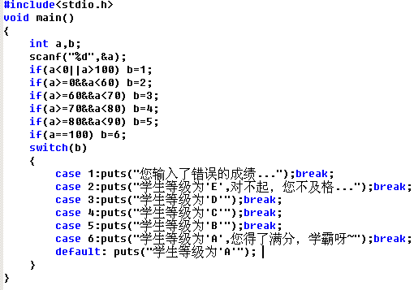</p>
<p>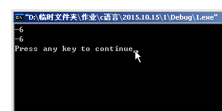</p>
<p>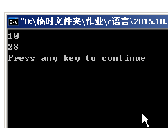</p>
<p>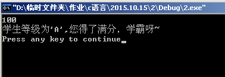</p>
<h2 id="三个程序的比较"><a href="#三个程序的比较" class="headerlink" title="三个程序的比较"></a>三个程序的比较</h2><p>分别根据不同的x来给y赋值（本质相同，判断条件不同）</p>
<figure class="highlight c++"><table><tr><td class="code"><pre><span class="line"><span class="meta">#<span class="meta-keyword">include</span><span class="meta-string">&lt;stdio.h&gt;</span></span></span><br><span class="line"></span><br><span class="line"><span class="function"><span class="keyword">void</span> <span class="title">main</span><span class="params">()</span></span></span><br><span class="line"><span class="function"></span>&#123;</span><br><span class="line">	<span class="keyword">int</span> x,y=<span class="number">1</span>;</span><br><span class="line">	<span class="built_in">scanf</span>(<span class="string">"%d"</span>,&amp;x);</span><br><span class="line">	<span class="keyword">if</span>(x&lt;=<span class="number">0</span>)</span><br><span class="line">    &#123;</span><br><span class="line">		<span class="keyword">if</span>(x&lt;<span class="number">0</span>)</span><br><span class="line">			y=<span class="number">-1</span>;</span><br><span class="line">		<span class="keyword">else</span> y=<span class="number">0</span>;</span><br><span class="line">	&#125;</span><br><span class="line">	<span class="built_in">printf</span>(<span class="string">"%d\n"</span>,y);</span><br><span class="line">&#125;</span><br></pre></td></tr></table></figure>

<figure class="highlight c++"><table><tr><td class="code"><pre><span class="line"><span class="meta">#<span class="meta-keyword">include</span><span class="meta-string">&lt;stdio.h&gt;</span></span></span><br><span class="line"></span><br><span class="line"><span class="function"><span class="keyword">void</span> <span class="title">main</span><span class="params">()</span></span></span><br><span class="line"><span class="function"></span>&#123;</span><br><span class="line">	<span class="keyword">int</span> x,y=<span class="number">0</span>;</span><br><span class="line">	<span class="built_in">scanf</span>(<span class="string">"%d"</span>,&amp;x);</span><br><span class="line">	<span class="keyword">if</span>(x&lt;<span class="number">0</span>||x&gt;<span class="number">0</span>)</span><br><span class="line">    &#123;</span><br><span class="line">		<span class="keyword">if</span>(x&lt;<span class="number">0</span>)</span><br><span class="line">			y=<span class="number">-1</span>;</span><br><span class="line">		<span class="keyword">else</span> y=<span class="number">1</span>;</span><br><span class="line">	&#125;</span><br><span class="line">	<span class="built_in">printf</span>(<span class="string">"%d\n"</span>,y);</span><br><span class="line">&#125;</span><br></pre></td></tr></table></figure>

<figure class="highlight c++"><table><tr><td class="code"><pre><span class="line"><span class="meta">#<span class="meta-keyword">include</span><span class="meta-string">&lt;stdio.h&gt;</span></span></span><br><span class="line"></span><br><span class="line"><span class="function"><span class="keyword">void</span> <span class="title">main</span><span class="params">()</span></span></span><br><span class="line"><span class="function"></span>&#123;</span><br><span class="line">	<span class="keyword">int</span> x,y=<span class="number">-1</span>;</span><br><span class="line">	<span class="built_in">scanf</span>(<span class="string">"%d"</span>,&amp;x);</span><br><span class="line">	<span class="keyword">if</span>(x&gt;=<span class="number">0</span>)</span><br><span class="line">    &#123;</span><br><span class="line">		<span class="keyword">if</span>(x&gt;<span class="number">0</span>)</span><br><span class="line">			y=<span class="number">1</span>;</span><br><span class="line">		<span class="keyword">else</span> y=<span class="number">0</span>;</span><br><span class="line">	&#125;</span><br><span class="line">	<span class="built_in">printf</span>(<span class="string">"%d\n"</span>,y);</span><br><span class="line">&#125;</span><br></pre></td></tr></table></figure>

<h1 id="作业【2015-10-17】"><a href="#作业【2015-10-17】" class="headerlink" title="作业【2015.10.17】"></a>作业【2015.10.17】</h1><h2 id="解一元二次方程"><a href="#解一元二次方程" class="headerlink" title="解一元二次方程"></a>解一元二次方程</h2><figure class="highlight c++"><table><tr><td class="code"><pre><span class="line"><span class="meta">#<span class="meta-keyword">include</span><span class="meta-string">&lt;stdio.h&gt;</span></span></span><br><span class="line"><span class="meta">#<span class="meta-keyword">include</span><span class="meta-string">&lt;math.h&gt;</span></span></span><br><span class="line"></span><br><span class="line"><span class="function"><span class="keyword">void</span> <span class="title">main</span><span class="params">()</span></span></span><br><span class="line"><span class="function"></span>&#123;</span><br><span class="line">	<span class="keyword">int</span> a,b,c,d,e,f,x1,x2;</span><br><span class="line">	<span class="built_in">puts</span>(<span class="string">"请对应输入方程的a,b,c"</span>);</span><br><span class="line">    <span class="built_in">scanf</span>(<span class="string">"%d %d %d"</span>,&amp;a,&amp;b,&amp;c);</span><br><span class="line">    d=b*b<span class="number">-4</span>*a*c;	</span><br><span class="line"> 	<span class="keyword">if</span>(d&lt;<span class="number">0</span>)</span><br><span class="line">	&#123;</span><br><span class="line">		f=<span class="built_in">sqrt</span>(-d);</span><br><span class="line">	    <span class="built_in">printf</span>(<span class="string">"x1=%d+%di\n"</span>,(-b)/(<span class="number">2</span>*a),f/(<span class="number">2</span>*a));</span><br><span class="line">        <span class="built_in">printf</span>(<span class="string">"x2=%d-%di\n"</span>,(-b)/(<span class="number">2</span>*a),f/(<span class="number">2</span>*a));</span><br><span class="line">	&#125;</span><br><span class="line">	<span class="keyword">if</span>(<span class="number">0</span>==d)</span><br><span class="line">	&#123;	</span><br><span class="line">		f=<span class="built_in">sqrt</span>(-d);</span><br><span class="line">		e=(-b)/(<span class="number">2</span>*a);</span><br><span class="line">	    <span class="built_in">printf</span>(<span class="string">"此方程有两个相等的根，为x=%d\n"</span>,e);</span><br><span class="line">	&#125;</span><br><span class="line">    <span class="keyword">if</span>(d&gt;<span class="number">0</span>)</span><br><span class="line">	&#123;   </span><br><span class="line">		f=<span class="built_in">sqrt</span>(d);</span><br><span class="line">		x1=(-b+f)/(<span class="number">2</span>*a);</span><br><span class="line">        x2=(-b-f)/(<span class="number">2</span>*a);</span><br><span class="line">		<span class="built_in">printf</span>(<span class="string">"x1=%d,x2=%d\n"</span>,x1,x2);</span><br><span class="line">	&#125;</span><br><span class="line">&#125;</span><br></pre></td></tr></table></figure>

<p>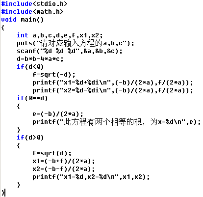</p>
<p>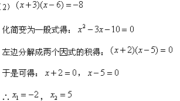</p>
<p>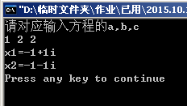</p>
<p>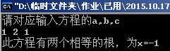</p>
<p>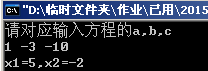</p>
<h2 id="switch菜单-n的阶乘"><a href="#switch菜单-n的阶乘" class="headerlink" title="switch菜单+n的阶乘"></a>switch菜单+n的阶乘</h2><figure class="highlight c++"><table><tr><td class="code"><pre><span class="line"><span class="meta">#<span class="meta-keyword">include</span><span class="meta-string">&lt;stdio.h&gt;</span></span></span><br><span class="line"><span class="meta">#<span class="meta-keyword">include</span><span class="meta-string">&lt;math.h&gt;</span></span></span><br><span class="line"></span><br><span class="line"><span class="function"><span class="keyword">void</span> <span class="title">main</span><span class="params">()</span></span></span><br><span class="line"><span class="function"></span>&#123;</span><br><span class="line">	<span class="keyword">int</span> a,b=<span class="number">1</span>,c=<span class="number">1</span>,n;</span><br><span class="line">	<span class="built_in">puts</span>(<span class="string">"请选择您想要执行的方式\n"</span>);</span><br><span class="line">	<span class="built_in">puts</span>(<span class="string">"1.for语句\n2.while语句\n3.do while语句\n4.go for+if语句\n"</span>);</span><br><span class="line">	<span class="built_in">scanf</span>(<span class="string">"%d"</span>,&amp;a);</span><br><span class="line">	<span class="keyword">switch</span>(a)</span><br><span class="line">	&#123;</span><br><span class="line">	    <span class="keyword">case</span> <span class="number">1</span>:<span class="built_in">puts</span>(<span class="string">"您选择的是for语句，请输入n"</span>);<span class="built_in">scanf</span>(<span class="string">"%d"</span>,&amp;n);<span class="keyword">for</span>(;b&lt;=n;c=b*c,b=b++);<span class="keyword">break</span>;</span><br><span class="line">		<span class="keyword">case</span> <span class="number">2</span>:<span class="built_in">puts</span>(<span class="string">"您选择的是while语句，请输入n"</span>);<span class="built_in">scanf</span>(<span class="string">"%d"</span>,&amp;n);</span><br><span class="line">			<span class="keyword">while</span>(b&lt;=n)</span><br><span class="line">			   &#123;</span><br><span class="line">				   c=b*c;</span><br><span class="line">				   b=b++;</span><br><span class="line">			   &#125;</span><br><span class="line">			  ;<span class="keyword">break</span>;</span><br><span class="line">		<span class="keyword">case</span> <span class="number">3</span>:<span class="built_in">puts</span>(<span class="string">"您选择的是do while语句，请输入n"</span>);<span class="built_in">scanf</span>(<span class="string">"%d"</span>,&amp;n);</span><br><span class="line">			   <span class="keyword">do</span></span><br><span class="line">			   &#123;</span><br><span class="line">				   c=b*c;</span><br><span class="line">				   b=b++;</span><br><span class="line">			   &#125;</span><br><span class="line">			   <span class="keyword">while</span>(b&lt;=n);<span class="keyword">break</span>;</span><br><span class="line">		<span class="keyword">case</span> <span class="number">4</span>:<span class="built_in">puts</span>(<span class="string">"您选择的是goto+if语句，请输入n"</span>);<span class="built_in">scanf</span>(<span class="string">"%d"</span>,&amp;n);</span><br><span class="line">             loop:<span class="keyword">if</span>(b&lt;=n)</span><br><span class="line">			   &#123;</span><br><span class="line">				   c=b*c;</span><br><span class="line">				   b=b++;</span><br><span class="line">				   <span class="keyword">goto</span> loop;<span class="keyword">break</span>;</span><br><span class="line">			   &#125;</span><br><span class="line">	&#125;</span><br><span class="line">	    <span class="built_in">printf</span>(<span class="string">"%d\n"</span>,c);</span><br><span class="line">&#125;</span><br></pre></td></tr></table></figure>

<p>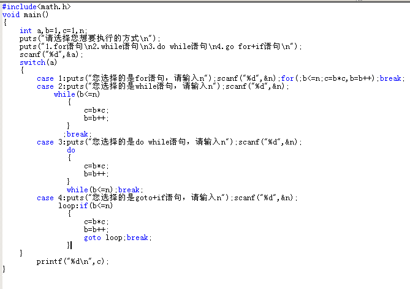</p>
<p>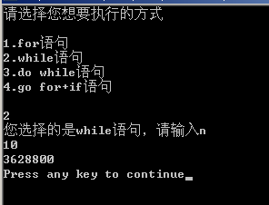</p>
<p>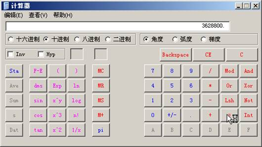</p>
<h2 id="N的阶加"><a href="#N的阶加" class="headerlink" title="N的阶加"></a>N的阶加</h2><figure class="highlight c++"><table><tr><td class="code"><pre><span class="line"><span class="comment">//2015.10.17</span></span><br><span class="line"><span class="meta">#<span class="meta-keyword">include</span><span class="meta-string">&lt;stdio.h&gt;</span></span></span><br><span class="line"></span><br><span class="line"><span class="function"><span class="keyword">void</span> <span class="title">main</span><span class="params">()</span></span></span><br><span class="line"><span class="function"></span>&#123;</span><br><span class="line">	<span class="keyword">int</span> a,b,n;</span><br><span class="line">	<span class="built_in">puts</span>(<span class="string">"请输入n\n"</span>);</span><br><span class="line">	<span class="built_in">scanf</span>(<span class="string">"%d"</span>,&amp;n);</span><br><span class="line">	<span class="keyword">for</span>(a=<span class="number">0</span>,b=<span class="number">1</span>;b&lt;=n;a=a+b,b=b++);</span><br><span class="line">	<span class="built_in">printf</span>(<span class="string">"%d\n"</span>,a);</span><br><span class="line">&#125;</span><br></pre></td></tr></table></figure>

<p>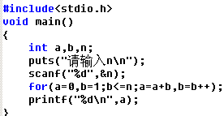</p>
<p>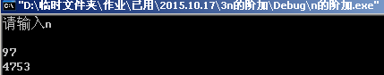</p>
<p>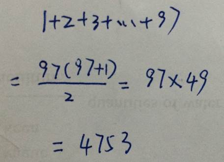</p>
<h2 id="显示1-10的平方数"><a href="#显示1-10的平方数" class="headerlink" title="显示1-10的平方数"></a>显示1-10的平方数</h2><figure class="highlight c++"><table><tr><td class="code"><pre><span class="line"><span class="meta">#<span class="meta-keyword">include</span><span class="meta-string">&lt;stdio.h&gt;</span></span></span><br><span class="line"></span><br><span class="line"><span class="function"><span class="keyword">void</span> <span class="title">main</span><span class="params">()</span></span></span><br><span class="line"><span class="function"></span>&#123;</span><br><span class="line">	<span class="keyword">int</span> a,n;</span><br><span class="line">	<span class="built_in">puts</span>(<span class="string">"请输入一个n"</span>);</span><br><span class="line">	<span class="built_in">scanf</span>(<span class="string">"%d"</span>,&amp;n);</span><br><span class="line">	a=n*n;</span><br><span class="line">	<span class="built_in">printf</span>(<span class="string">"该数的平方数为%d\n"</span>,a);</span><br><span class="line">&#125;</span><br></pre></td></tr></table></figure>

<p>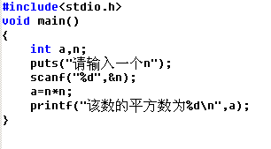</p>
<p>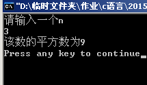</p>
<h1 id="作业【2015-10-25】"><a href="#作业【2015-10-25】" class="headerlink" title="作业【2015.10.25】"></a>作业【2015.10.25】</h1><h2 id="十进制转十六进制"><a href="#十进制转十六进制" class="headerlink" title="十进制转十六进制"></a>十进制转十六进制</h2><figure class="highlight c++"><table><tr><td class="code"><pre><span class="line"><span class="meta">#<span class="meta-keyword">include</span><span class="meta-string">&lt;stdio.h&gt;</span></span></span><br><span class="line"></span><br><span class="line"><span class="function"><span class="keyword">void</span> <span class="title">main</span><span class="params">()</span></span></span><br><span class="line"><span class="function"></span>&#123;</span><br><span class="line">	<span class="keyword">int</span> a,b,c[<span class="number">100</span>],d=<span class="number">0</span>,e;</span><br><span class="line">	<span class="built_in">scanf</span>(<span class="string">"%d"</span>,&amp;a);</span><br><span class="line">	<span class="keyword">for</span>(;a&gt;=<span class="number">1</span>;d=d++)</span><br><span class="line">	&#123;</span><br><span class="line">		(a%<span class="number">16</span>)&lt;<span class="number">10</span>?c[d]=a%<span class="number">16</span>:c[d]=(a%<span class="number">16</span>)+<span class="number">55</span>;a=a/<span class="number">16</span>;</span><br><span class="line">	&#125;</span><br><span class="line">	<span class="keyword">for</span>(e=d<span class="number">-1</span>;e&gt;=<span class="number">0</span>;e--)</span><br><span class="line">	&#123;</span><br><span class="line">		(c[e]&lt;<span class="number">10</span>)?<span class="built_in">printf</span>(<span class="string">"%d"</span>,c[e]):<span class="built_in">printf</span>(<span class="string">"%c"</span>,c[e]);</span><br><span class="line">	&#125;</span><br><span class="line">&#125;</span><br></pre></td></tr></table></figure>

<p>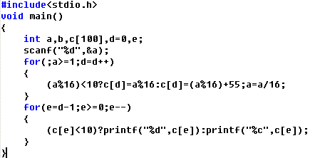</p>
<p>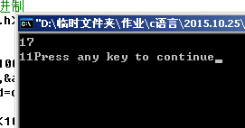</p>
<h2 id="扑克牌洗牌"><a href="#扑克牌洗牌" class="headerlink" title="扑克牌洗牌"></a>扑克牌洗牌</h2><figure class="highlight c++"><table><tr><td class="code"><pre><span class="line"><span class="meta">#<span class="meta-keyword">include</span><span class="meta-string">&lt;stdio.h&gt;</span></span></span><br><span class="line"><span class="meta">#<span class="meta-keyword">include</span><span class="meta-string">&lt;stdlib.h&gt;</span></span></span><br><span class="line"><span class="meta">#<span class="meta-keyword">include</span><span class="meta-string">&lt;time.h&gt;</span></span></span><br><span class="line"></span><br><span class="line"><span class="function"><span class="keyword">void</span> <span class="title">main</span><span class="params">()</span></span></span><br><span class="line"><span class="function"></span>&#123;</span><br><span class="line">	<span class="keyword">int</span> a=<span class="number">0</span>,card[<span class="number">52</span>],b,c;</span><br><span class="line">	<span class="built_in">puts</span>(<span class="string">" 甲 乙 丙 丁"</span>);</span><br><span class="line">	<span class="keyword">while</span>(a&lt;=<span class="number">52</span>)</span><br><span class="line">	&#123;</span><br><span class="line">		card[a]=a+<span class="number">1</span>;</span><br><span class="line">		a=a++;</span><br><span class="line">	&#125;</span><br><span class="line">	srand(time(<span class="number">0</span>));</span><br><span class="line">	<span class="keyword">for</span>(a=<span class="number">0</span>;a&lt;<span class="number">52</span>;a=a++)</span><br><span class="line">	&#123;</span><br><span class="line">		b=rand()%(<span class="number">52</span>-a)+a;</span><br><span class="line">		c=card[a];</span><br><span class="line">		card[a]=card[b];</span><br><span class="line">		card[b]=c;</span><br><span class="line">		<span class="built_in">printf</span>(<span class="string">"%3d"</span>,card[a]);</span><br><span class="line">		<span class="keyword">if</span>(a!=<span class="number">0</span>)</span><br><span class="line">			<span class="keyword">if</span>(a%<span class="number">4</span>==<span class="number">0</span>)</span><br><span class="line">				<span class="built_in">printf</span>(<span class="string">"\n"</span>);</span><br><span class="line">			<span class="keyword">else</span> <span class="number">1</span>==<span class="number">1</span>;</span><br><span class="line">		<span class="keyword">else</span> a=a++;</span><br><span class="line">	&#125;</span><br><span class="line">	<span class="built_in">printf</span>(<span class="string">"%3d\n"</span>,card[a]);</span><br><span class="line">&#125;</span><br></pre></td></tr></table></figure>

<p>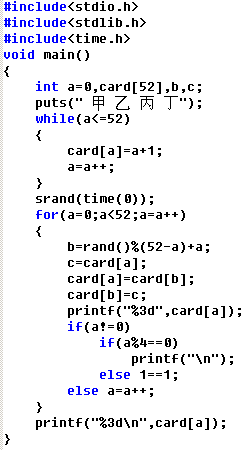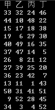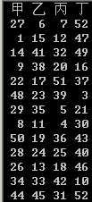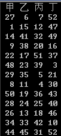</p>
<h1 id="函数【2015-11-5】"><a href="#函数【2015-11-5】" class="headerlink" title="函数【2015.11.5】"></a>函数【2015.11.5】</h1><h2 id="strcmp字符串比较函数"><a href="#strcmp字符串比较函数" class="headerlink" title="strcmp字符串比较函数"></a>strcmp字符串比较函数</h2><figure class="highlight c++"><table><tr><td class="code"><pre><span class="line"><span class="meta">#<span class="meta-keyword">include</span><span class="meta-string">&lt;stdio.h&gt;</span></span></span><br><span class="line"><span class="meta">#<span class="meta-keyword">include</span><span class="meta-string">&lt;string.h&gt;</span></span></span><br><span class="line"></span><br><span class="line"><span class="function"><span class="keyword">void</span> <span class="title">main</span><span class="params">()</span></span></span><br><span class="line"><span class="function"></span>&#123;</span><br><span class="line">	<span class="keyword">char</span> a[<span class="number">20</span>],b[<span class="number">20</span>];</span><br><span class="line">	gets(a);</span><br><span class="line">	gets(b);</span><br><span class="line">	<span class="built_in">strcmp</span>(a,b);</span><br><span class="line">	<span class="built_in">printf</span>(<span class="string">"%d\n"</span>,<span class="built_in">strcmp</span>(a,b));</span><br><span class="line">&#125;</span><br></pre></td></tr></table></figure>

<h2 id="strcpy字符串拷贝函数"><a href="#strcpy字符串拷贝函数" class="headerlink" title="strcpy字符串拷贝函数"></a>strcpy字符串拷贝函数</h2><figure class="highlight c++"><table><tr><td class="code"><pre><span class="line"><span class="meta">#<span class="meta-keyword">include</span><span class="meta-string">&lt;stdio.h&gt;</span></span></span><br><span class="line"><span class="meta">#<span class="meta-keyword">include</span><span class="meta-string">&lt;string.h&gt;</span></span></span><br><span class="line"></span><br><span class="line"><span class="function"><span class="keyword">void</span> <span class="title">main</span><span class="params">()</span></span></span><br><span class="line"><span class="function"></span>&#123;</span><br><span class="line">	<span class="keyword">char</span> a[<span class="number">20</span>],b[<span class="number">20</span>];</span><br><span class="line">	gets(a);</span><br><span class="line">	<span class="built_in">strcpy</span>(b,a);</span><br><span class="line">	<span class="built_in">printf</span>(<span class="string">"%s\n"</span>,b);</span><br><span class="line">&#125;</span><br></pre></td></tr></table></figure>

<h2 id="strcat字符串连接函数"><a href="#strcat字符串连接函数" class="headerlink" title="strcat字符串连接函数"></a>strcat字符串连接函数</h2><figure class="highlight c++"><table><tr><td class="code"><pre><span class="line"><span class="meta">#<span class="meta-keyword">include</span><span class="meta-string">&lt;stdio.h&gt;</span></span></span><br><span class="line"><span class="meta">#<span class="meta-keyword">include</span><span class="meta-string">&lt;string.h&gt;</span></span></span><br><span class="line"></span><br><span class="line"><span class="function"><span class="keyword">void</span> <span class="title">main</span><span class="params">()</span></span></span><br><span class="line"><span class="function"></span>&#123;</span><br><span class="line">	<span class="keyword">char</span> a[<span class="number">40</span>],b[<span class="number">20</span>];</span><br><span class="line">	gets(a);</span><br><span class="line">	gets(b);</span><br><span class="line">	<span class="built_in">strcat</span>(a,b);</span><br><span class="line">	<span class="built_in">printf</span>(<span class="string">"%s\n"</span>,a);</span><br><span class="line">&#125;</span><br></pre></td></tr></table></figure>

<p>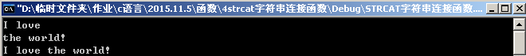</p>
<h2 id="strlen字符串长度测试函数"><a href="#strlen字符串长度测试函数" class="headerlink" title="strlen字符串长度测试函数"></a>strlen字符串长度测试函数</h2><figure class="highlight c++"><table><tr><td class="code"><pre><span class="line"><span class="meta">#<span class="meta-keyword">include</span><span class="meta-string">&lt;stdio.h&gt;</span></span></span><br><span class="line"><span class="meta">#<span class="meta-keyword">include</span><span class="meta-string">&lt;string.h&gt;</span></span></span><br><span class="line"></span><br><span class="line"><span class="function"><span class="keyword">void</span> <span class="title">main</span><span class="params">()</span></span></span><br><span class="line"><span class="function"></span>&#123;</span><br><span class="line">	<span class="keyword">char</span> a[<span class="number">20</span>];</span><br><span class="line">	gets(a);</span><br><span class="line">	<span class="built_in">printf</span>(<span class="string">"%d\n"</span>,<span class="built_in">strlen</span>(a));</span><br><span class="line">&#125;</span><br></pre></td></tr></table></figure>

<p>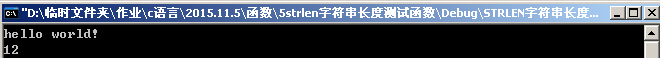</p>
<figure class="highlight plain"><table><tr><td class="code"><pre><span class="line">H  e  l  l  o  *  w  o  r  l  d  !     （*表示空格）</span><br><span class="line">1  2  3  4  5  6  7  8  9  A  B  C</span><br></pre></td></tr></table></figure>

<h2 id="strlwr字符串转换函数（大转小）"><a href="#strlwr字符串转换函数（大转小）" class="headerlink" title="strlwr字符串转换函数（大转小）"></a>strlwr字符串转换函数（大转小）</h2><figure class="highlight c++"><table><tr><td class="code"><pre><span class="line"><span class="meta">#<span class="meta-keyword">include</span><span class="meta-string">&lt;stdio.h&gt;</span></span></span><br><span class="line"><span class="meta">#<span class="meta-keyword">include</span><span class="meta-string">&lt;string.h&gt;</span></span></span><br><span class="line"></span><br><span class="line"><span class="function"><span class="keyword">void</span> <span class="title">main</span><span class="params">()</span></span></span><br><span class="line"><span class="function"></span>&#123;</span><br><span class="line">	<span class="keyword">char</span> a[<span class="number">20</span>];</span><br><span class="line">	gets(a);</span><br><span class="line">	strlwr(a);</span><br><span class="line">	<span class="built_in">printf</span>(<span class="string">"%s\n"</span>,strlwr(a));</span><br><span class="line">&#125;</span><br></pre></td></tr></table></figure>

<p>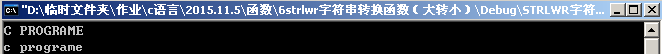</p>
<h2 id="strupr字符串转换函数（小转大）"><a href="#strupr字符串转换函数（小转大）" class="headerlink" title="strupr字符串转换函数（小转大）"></a>strupr字符串转换函数（小转大）</h2><figure class="highlight c++"><table><tr><td class="code"><pre><span class="line"><span class="meta">#<span class="meta-keyword">include</span><span class="meta-string">&lt;stdio.h&gt;</span></span></span><br><span class="line"><span class="meta">#<span class="meta-keyword">include</span><span class="meta-string">&lt;string.h&gt;</span></span></span><br><span class="line"></span><br><span class="line"><span class="function"><span class="keyword">void</span> <span class="title">main</span><span class="params">()</span></span></span><br><span class="line"><span class="function"></span>&#123;</span><br><span class="line">	<span class="keyword">char</span> a[<span class="number">20</span>];</span><br><span class="line">	gets(a);</span><br><span class="line">	<span class="built_in">printf</span>(<span class="string">"%s\n"</span>,strupr(a));<span class="comment">//(比六的代码更精简)</span></span><br><span class="line">&#125;</span><br></pre></td></tr></table></figure>

<p>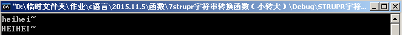</p>
<h1 id="大小写字符转换【2015-11-12】"><a href="#大小写字符转换【2015-11-12】" class="headerlink" title="大小写字符转换【2015.11.12】"></a>大小写字符转换【2015.11.12】</h1><h2 id="V1-0"><a href="#V1-0" class="headerlink" title="V1.0"></a>V1.0</h2><figure class="highlight c++"><table><tr><td class="code"><pre><span class="line"><span class="meta">#<span class="meta-keyword">include</span><span class="meta-string">&lt;stdio.h&gt;</span></span></span><br><span class="line"><span class="function"><span class="keyword">void</span> <span class="title">L2UandU2L</span><span class="params">(<span class="keyword">char</span> str[])</span></span>;</span><br><span class="line"></span><br><span class="line">main()</span><br><span class="line">&#123;</span><br><span class="line">	<span class="keyword">char</span> a[]=<span class="string">"1aS2dF3zX4cV"</span>;</span><br><span class="line">	<span class="built_in">puts</span>(a);</span><br><span class="line">	L2UandU2L(a);</span><br><span class="line">	<span class="built_in">puts</span>(a);</span><br><span class="line">&#125;</span><br><span class="line"></span><br><span class="line"><span class="function"><span class="keyword">void</span> <span class="title">L2UandU2L</span><span class="params">(<span class="keyword">char</span> str[])</span></span></span><br><span class="line"><span class="function"></span>&#123;</span><br><span class="line">	<span class="keyword">int</span> i=<span class="number">0</span>;</span><br><span class="line">	<span class="keyword">while</span>(str[i])</span><br><span class="line">	&#123;</span><br><span class="line">		<span class="keyword">if</span>(str[i]&gt;=<span class="string">'a'</span>&amp;&amp;str[i]&lt;=<span class="string">'z'</span>)</span><br><span class="line">			str[i]=str[i]-<span class="string">'a'</span>+<span class="string">'A'</span>;</span><br><span class="line">		<span class="keyword">else</span> <span class="keyword">if</span>(str[i]&gt;=<span class="string">'A'</span>&amp;&amp;str[i]&lt;=<span class="string">'Z'</span>)</span><br><span class="line">			str[i]=str[i]-<span class="string">'A'</span>+<span class="string">'a'</span>;</span><br><span class="line">		i++;</span><br><span class="line">	&#125;</span><br><span class="line">&#125;</span><br></pre></td></tr></table></figure>

<p>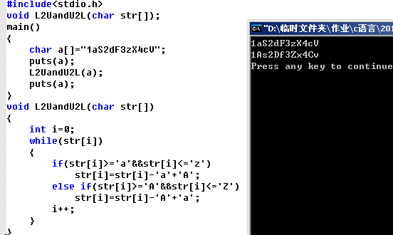</p>
<h2 id="V2-0"><a href="#V2-0" class="headerlink" title="V2.0"></a>V2.0</h2><p>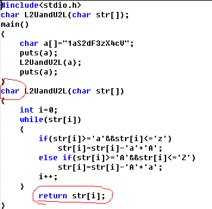</p>
<h1 id="作业【2015-11-16】"><a href="#作业【2015-11-16】" class="headerlink" title="作业【2015.11.16】"></a>作业【2015.11.16】</h1><h2 id="Dir"><a href="#Dir" class="headerlink" title="Dir"></a>Dir</h2><p>显示目录文件和子目录列表。如果在没有参数的情况下使用，则 dir 显示磁盘的卷标和序列号，后接磁盘上目录和文件的列表，包括它们的名称和最近修改的日期及时间。dir 可以显示文件的扩展名以及文件的字节大小。Dir 也显示列出的文件及目录的总数、累计大小和磁盘上保留的可用空间（以字节为单位）。</p>
<p> 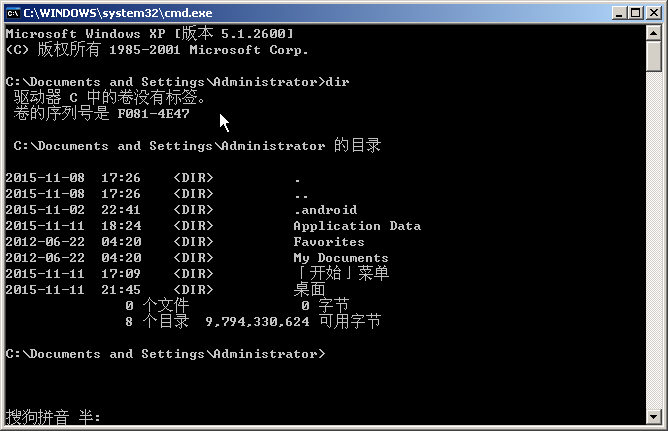</p>
<h2 id="Path"><a href="#Path" class="headerlink" title="Path"></a>Path</h2><p>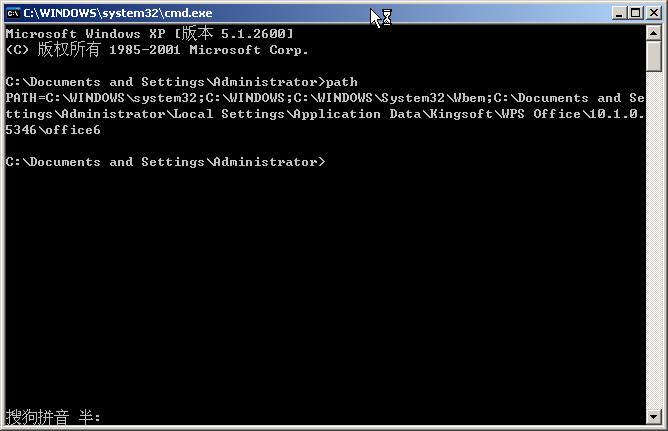</p>
<p>可用”path 路径;%path%”添加路径</p>
<h2 id="include中的-lt-gt-和””的区别"><a href="#include中的-lt-gt-和””的区别" class="headerlink" title="#include中的&lt;&gt;和””的区别"></a>#include中的&lt;&gt;和””的区别</h2><p>&lt;&gt;先去系统目录中找头文件，如果没有在到当前目录下找。所以像标准的头文件 stdio.h、stdlib.h等用这个方法。<br> 而””首先在当前目录下寻找，如果找不到，再到系统目录中寻找。 这个用于include自定义的头文件，让系统优先使用当前目录中定义的。</p>
<h2 id="Stdio-h"><a href="#Stdio-h" class="headerlink" title="Stdio.h"></a>Stdio.h</h2><p>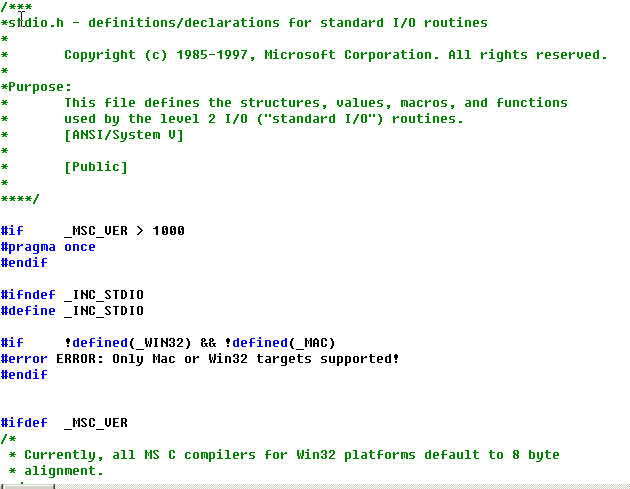</p>
<h1 id="交换两个变量的值【2015-11-22】"><a href="#交换两个变量的值【2015-11-22】" class="headerlink" title="交换两个变量的值【2015.11.22】"></a>交换两个变量的值【2015.11.22】</h1><h2 id="指针-引用temp"><a href="#指针-引用temp" class="headerlink" title="指针-引用temp"></a>指针-引用temp</h2><figure class="highlight c++"><table><tr><td class="code"><pre><span class="line"><span class="meta">#<span class="meta-keyword">include</span><span class="meta-string">&lt;stdio.h&gt;</span></span></span><br><span class="line"></span><br><span class="line"><span class="function"><span class="keyword">void</span> <span class="title">swap</span><span class="params">(<span class="keyword">int</span> *x,<span class="keyword">int</span> *y)</span></span></span><br><span class="line"><span class="function"></span>&#123;</span><br><span class="line">	<span class="keyword">int</span> temp;</span><br><span class="line">	temp=*x;</span><br><span class="line">	*x=*y;</span><br><span class="line">	*y=temp;</span><br><span class="line">&#125;</span><br><span class="line"></span><br><span class="line"><span class="function"><span class="keyword">void</span> <span class="title">main</span><span class="params">(<span class="keyword">int</span> x,<span class="keyword">int</span> y)</span></span></span><br><span class="line"><span class="function"></span>&#123;</span><br><span class="line">	<span class="built_in">scanf</span>(<span class="string">"%d %d"</span>,&amp;x,&amp;y);	</span><br><span class="line">	swap(&amp;x,&amp;y);</span><br><span class="line">	<span class="built_in">printf</span>(<span class="string">"%d %d\n"</span>,x,y);</span><br><span class="line">&#125;</span><br></pre></td></tr></table></figure>

<h2 id="异或"><a href="#异或" class="headerlink" title="异或"></a>异或</h2><figure class="highlight c++"><table><tr><td class="code"><pre><span class="line"><span class="meta">#<span class="meta-keyword">include</span><span class="meta-string">&lt;stdio.h&gt;</span></span></span><br><span class="line"></span><br><span class="line"><span class="function"><span class="keyword">void</span> <span class="title">swap</span><span class="params">(<span class="keyword">int</span> *x,<span class="keyword">int</span> *y)</span></span></span><br><span class="line"><span class="function"></span>&#123;</span><br><span class="line">	*x^=*y;</span><br><span class="line">	*y^=*x;</span><br><span class="line">	*x^=*y;</span><br><span class="line">&#125;</span><br><span class="line"></span><br><span class="line"><span class="function"><span class="keyword">void</span> <span class="title">main</span><span class="params">(<span class="keyword">int</span> x,<span class="keyword">int</span> y)</span></span></span><br><span class="line"><span class="function"></span>&#123;</span><br><span class="line">	<span class="built_in">scanf</span>(<span class="string">"%d %d"</span>,&amp;x,&amp;y);	</span><br><span class="line">	swap(&amp;x,&amp;y);</span><br><span class="line">	<span class="built_in">printf</span>(<span class="string">"%d %d\n"</span>,x,y);</span><br><span class="line">&#125;</span><br></pre></td></tr></table></figure>

<p>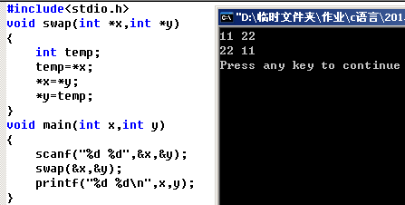</p>
<p>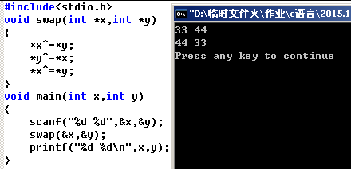</p>
<h2 id="引用传递"><a href="#引用传递" class="headerlink" title="引用传递"></a>引用传递</h2><figure class="highlight c++"><table><tr><td class="code"><pre><span class="line"><span class="meta">#<span class="meta-keyword">include</span><span class="meta-string">&lt;stdio.h&gt;</span></span></span><br><span class="line"></span><br><span class="line"><span class="function"><span class="keyword">void</span> <span class="title">swap</span><span class="params">(<span class="keyword">int</span> &amp;x,<span class="keyword">int</span> &amp;y)</span></span></span><br><span class="line"><span class="function"></span>&#123;</span><br><span class="line">	<span class="keyword">int</span> temp;</span><br><span class="line">	temp=x;</span><br><span class="line">	x=y;</span><br><span class="line">	y=temp;</span><br><span class="line">&#125;</span><br><span class="line"></span><br><span class="line"><span class="function"><span class="keyword">void</span> <span class="title">main</span><span class="params">(<span class="keyword">int</span> x,<span class="keyword">int</span> y)</span></span></span><br><span class="line"><span class="function"></span>&#123;</span><br><span class="line">	<span class="built_in">scanf</span>(<span class="string">"%d %d"</span>,&amp;x,&amp;y);	</span><br><span class="line">	swap(x,y);</span><br><span class="line">	<span class="built_in">printf</span>(<span class="string">"%d %d\n"</span>,x,y);</span><br><span class="line">&#125;</span><br></pre></td></tr></table></figure>

<p>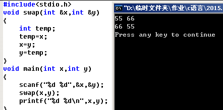</p>
<h1 id="多种方法输出及查看内存和值【2015-11-26】"><a href="#多种方法输出及查看内存和值【2015-11-26】" class="headerlink" title="多种方法输出及查看内存和值【2015.11.26】"></a>多种方法输出及查看内存和值【2015.11.26】</h1><h2 id="多种方法输出hellp-world"><a href="#多种方法输出hellp-world" class="headerlink" title="多种方法输出hellp world"></a>多种方法输出hellp world</h2><figure class="highlight c++"><table><tr><td class="code"><pre><span class="line"><span class="meta">#<span class="meta-keyword">include</span><span class="meta-string">&lt;stdio.h&gt;</span></span></span><br><span class="line"><span class="meta">#<span class="meta-keyword">include</span><span class="meta-string">&lt;string.h&gt;</span></span></span><br><span class="line"></span><br><span class="line">main()</span><br><span class="line">&#123;</span><br><span class="line">	<span class="keyword">int</span> i;</span><br><span class="line">	<span class="keyword">char</span> a[]=<span class="string">"hello world"</span>,*b;</span><br><span class="line">	b=a;</span><br><span class="line">	<span class="built_in">printf</span>(<span class="string">"hello world\n"</span>);  <span class="comment">//printf函数</span></span><br><span class="line">	<span class="built_in">puts</span>(<span class="string">"hello world"</span>);      <span class="comment">//puts函数</span></span><br><span class="line">	<span class="built_in">printf</span>(<span class="string">"%s\n"</span>,a);         <span class="comment">//数组整体输出</span></span><br><span class="line">	<span class="keyword">for</span>(i=<span class="number">0</span>;i&lt;<span class="built_in">strlen</span>(a);i++)</span><br><span class="line">		<span class="built_in">printf</span>(<span class="string">"%c"</span>,a[i]);      <span class="comment">//数组单个元素循环输出</span></span><br><span class="line">	<span class="built_in">printf</span>(<span class="string">"\n"</span>);</span><br><span class="line">	<span class="built_in">printf</span>(<span class="string">"%s\n"</span>,b);         <span class="comment">//运用指针的数组输出</span></span><br><span class="line">	<span class="keyword">for</span>(;*b;b++)</span><br><span class="line">		<span class="built_in">printf</span>(<span class="string">"%c"</span>,*b);        <span class="comment">//按照地址单个输出</span></span><br><span class="line">	<span class="built_in">printf</span>(<span class="string">"\n"</span>);</span><br><span class="line">&#125;</span><br></pre></td></tr></table></figure>

<p>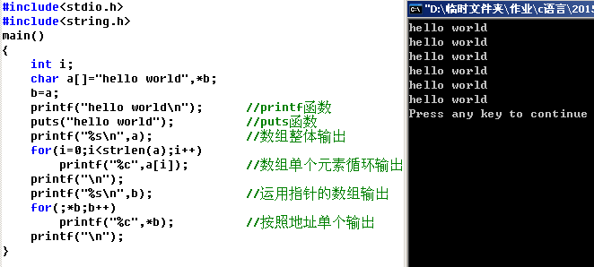</p>
<h2 id="查看内存和值"><a href="#查看内存和值" class="headerlink" title="查看内存和值"></a>查看内存和值</h2><p>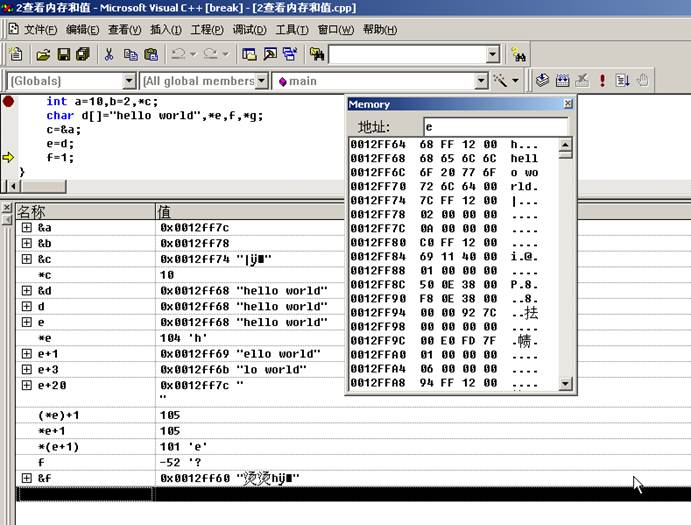</p>
<h1 id="dos常用命令"><a href="#dos常用命令" class="headerlink" title="dos常用命令"></a>dos常用命令</h1><h2 id="DIR"><a href="#DIR" class="headerlink" title="DIR"></a>DIR</h2><p>含义：显示指定路径上所有文件或目录的信息</p>
<p>格式：DIR [盘符：][路径][文件名] [参数]</p>
<p>参数：</p>
<p>/W：<a href="http://product.pconline.com.cn/itbk/diy/display/1111/2579088.html" target="_blank" rel="noopener">宽屏</a>显示，一排显示5个文件名，而不会显示修改时间，文件大小等信息;</p>
<p>/P：分页显示，当屏幕无法将信息完全显示时，可使用其进行分页显示;</p>
<p>/A：显示具有特殊属性的文件;</p>
<p>/S：显示当前目录及其子目录下所有的文件。</p>
<p>举例：DIR /P</p>
<p>将分屏显示当前目录下文件。在当前屏最后有一个“Press any key to continue . . .”提示，表示按任意键继续。</p>
<p><a href="http://www.pconline.com.cn/images/html/viewpic_pconline.htm?http:/img0.pconline.com.cn/pconline/1404/14/4604099_1.jpg&channel=8970" target="_blank" rel="noopener">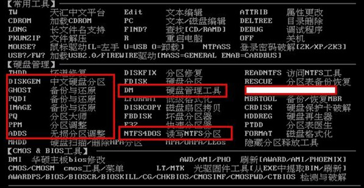</a></p>
<h2 id="taskkill"><a href="#taskkill" class="headerlink" title="taskkill"></a>taskkill</h2><p>taskkill /f /im 想要结束的进程名 /f：指定强制终止的进程 /im ：映像名称 在后面可加/t：结束进程树</p>
<h1 id="字典程序"><a href="#字典程序" class="headerlink" title="字典程序"></a>字典程序</h1><h2 id="V1-0【2015-12-3】"><a href="#V1-0【2015-12-3】" class="headerlink" title="V1.0【2015.12.3】"></a>V1.0【2015.12.3】</h2><figure class="highlight c++"><table><tr><td class="code"><pre><span class="line"><span class="meta">#<span class="meta-keyword">include</span> <span class="meta-string">&lt;stdio.h&gt;</span></span></span><br><span class="line"></span><br><span class="line"><span class="function"><span class="keyword">void</span> <span class="title">main</span><span class="params">()</span></span></span><br><span class="line"><span class="function"></span>&#123;</span><br><span class="line">	<span class="keyword">int</span> a,i,j,k,l;</span><br><span class="line">	<span class="keyword">char</span> b[]=<span class="string">"ABCDEFGHIJKLMNOPQRSTUVWXYZabcdefghijklmnopqrstuvwxyz0123456789"</span>;</span><br><span class="line">	<span class="built_in">puts</span>(<span class="string">"请输入1-4来选择您想要对应尾数的字典程序"</span>);</span><br><span class="line">	<span class="built_in">scanf</span>(<span class="string">"%d"</span>,&amp;a);</span><br><span class="line">	<span class="built_in">puts</span>(<span class="string">"生成的字典为"</span>);</span><br><span class="line">	<span class="keyword">if</span>(a&lt;<span class="number">1</span>||a&gt;<span class="number">4</span>)</span><br><span class="line">		<span class="built_in">puts</span>(<span class="string">"你输入的数字不符合要求"</span>);</span><br><span class="line">	<span class="keyword">else</span></span><br><span class="line">	&#123;</span><br><span class="line">		<span class="keyword">switch</span>(a)</span><br><span class="line">		&#123;</span><br><span class="line">		<span class="keyword">case</span> <span class="number">1</span>:<span class="keyword">for</span>(i=<span class="number">0</span>;i&lt;<span class="number">62</span>;i++)</span><br><span class="line">			   &#123;</span><br><span class="line">				   <span class="built_in">printf</span>(<span class="string">"%c "</span>,b[i]);</span><br><span class="line">			   &#125;</span><br><span class="line">			<span class="keyword">break</span>;</span><br><span class="line">		<span class="keyword">case</span> <span class="number">2</span>:<span class="keyword">for</span>(i=<span class="number">0</span>;i&lt;<span class="number">62</span>;i++)</span><br><span class="line">			   &#123;</span><br><span class="line">				   <span class="keyword">for</span>(j=<span class="number">0</span>;j&lt;<span class="number">62</span>;j++)</span><br><span class="line">				   &#123;</span><br><span class="line">					   <span class="built_in">printf</span>(<span class="string">"%c%c  "</span>,b[i],b[j]);</span><br><span class="line">				   &#125;</span><br><span class="line">			   &#125;</span><br><span class="line">			<span class="keyword">break</span>;</span><br><span class="line">		<span class="keyword">case</span> <span class="number">3</span>:<span class="keyword">for</span>(i=<span class="number">0</span>;i&lt;<span class="number">62</span>;i++)</span><br><span class="line">			   &#123;</span><br><span class="line">				   <span class="keyword">for</span>(j=<span class="number">0</span>;j&lt;<span class="number">62</span>;j++)</span><br><span class="line">				   &#123;</span><br><span class="line">					   <span class="keyword">for</span>(k=<span class="number">0</span>;k&lt;<span class="number">62</span>;k++)</span><br><span class="line">					   &#123;</span><br><span class="line">						   <span class="built_in">printf</span>(<span class="string">"%c%c%c "</span>,b[i],b[j],b[k]);</span><br><span class="line">					   &#125;</span><br><span class="line">				   &#125;</span><br><span class="line">			   &#125;;</span><br><span class="line">			<span class="keyword">break</span>;</span><br><span class="line">		<span class="keyword">case</span> <span class="number">4</span>:<span class="keyword">for</span>(i=<span class="number">0</span>;i&lt;<span class="number">62</span>;i++)</span><br><span class="line">			   &#123;</span><br><span class="line">				   <span class="keyword">for</span>(j=<span class="number">0</span>;j&lt;<span class="number">62</span>;j++)</span><br><span class="line">				   &#123;</span><br><span class="line">					   <span class="keyword">for</span>(k=<span class="number">0</span>;k&lt;<span class="number">62</span>;k++)</span><br><span class="line">					   &#123;</span><br><span class="line">						   <span class="keyword">for</span>(l=<span class="number">0</span>;l&lt;<span class="number">62</span>;l++)</span><br><span class="line">							   <span class="built_in">printf</span>(<span class="string">"%c%c%c%c "</span>,b[i],b[j],b[k],b[l]);</span><br><span class="line">					   &#125;</span><br><span class="line">				   &#125;</span><br><span class="line">			   &#125;;</span><br><span class="line">			<span class="keyword">break</span>;</span><br><span class="line">		&#125;</span><br><span class="line">	&#125;</span><br><span class="line">&#125;</span><br><span class="line"></span><br><span class="line"><span class="comment">// 运用嵌套的for循环来实现功能，这个最基础的方法，也是最繁琐的、代码最长的方法。</span></span><br></pre></td></tr></table></figure>

<p>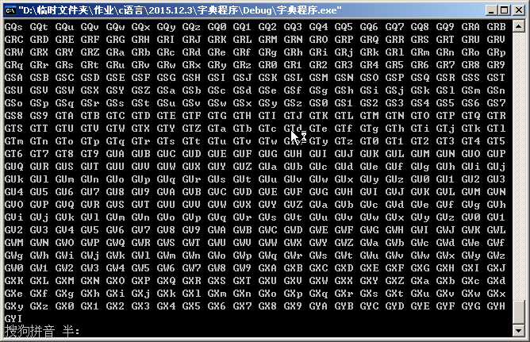</p>
<p>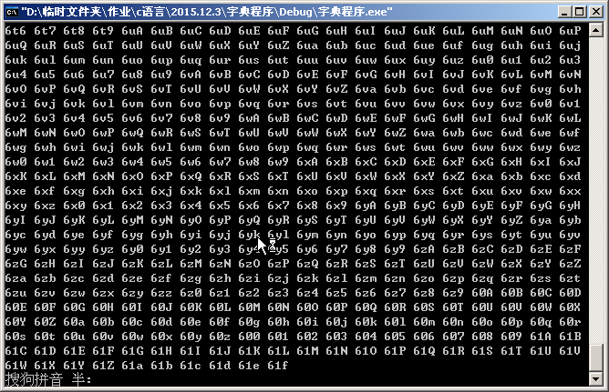</p>
<p>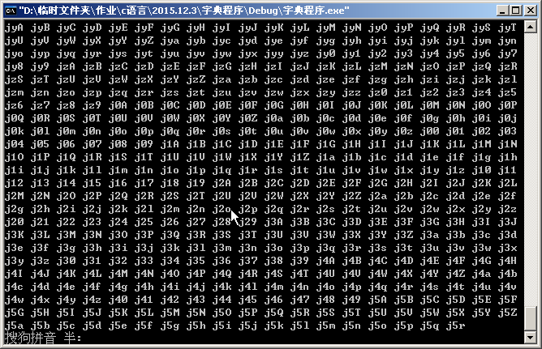</p>
<h2 id="V2-0（带结构体）【2015-12-10】"><a href="#V2-0（带结构体）【2015-12-10】" class="headerlink" title="V2.0（带结构体）【2015.12.10】"></a>V2.0（带结构体）【2015.12.10】</h2><figure class="highlight c++"><table><tr><td class="code"><pre><span class="line"><span class="meta">#<span class="meta-keyword">include</span> <span class="meta-string">&lt;stdio.h&gt;</span></span></span><br><span class="line"></span><br><span class="line">dir1(<span class="keyword">int</span> a);</span><br><span class="line">dir2(<span class="keyword">int</span> a);</span><br><span class="line">dir3(<span class="keyword">int</span> a);</span><br><span class="line">dir4(<span class="keyword">int</span> a);</span><br><span class="line"></span><br><span class="line"><span class="class"><span class="keyword">struct</span> <span class="title">data</span></span></span><br><span class="line"><span class="class">&#123;</span></span><br><span class="line">	<span class="keyword">char</span> b[<span class="number">63</span>];</span><br><span class="line">&#125;;</span><br><span class="line"></span><br><span class="line"><span class="class"><span class="keyword">struct</span> <span class="title">data</span> <span class="title">c</span>=&#123;</span><span class="string">"ABCDEFGHIJKLMNOPQRSTUVWXYZabcdefghijklmnopqrstuvwxyz0123456789"</span>&#125;;</span><br><span class="line"><span class="keyword">int</span> a,i,j,k,l;</span><br><span class="line"></span><br><span class="line"><span class="function"><span class="keyword">void</span> <span class="title">main</span><span class="params">()</span></span></span><br><span class="line"><span class="function"></span>&#123;</span><br><span class="line"></span><br><span class="line">	<span class="built_in">puts</span>(<span class="string">"请输入1-4来选择您想要对应尾数的字典程序"</span>);</span><br><span class="line">	<span class="built_in">scanf</span>(<span class="string">"%d"</span>,&amp;a);</span><br><span class="line">	<span class="built_in">puts</span>(<span class="string">"生成的字典为"</span>);</span><br><span class="line">	<span class="keyword">if</span>(a&lt;<span class="number">1</span>||a&gt;<span class="number">4</span>)</span><br><span class="line">		<span class="built_in">puts</span>(<span class="string">"你输入的数字不符合要求"</span>);</span><br><span class="line">	<span class="keyword">else</span></span><br><span class="line">	&#123;</span><br><span class="line">		<span class="keyword">switch</span>(a)</span><br><span class="line">		&#123;</span><br><span class="line">		<span class="keyword">case</span> <span class="number">1</span>:dir1(a);<span class="keyword">break</span>;</span><br><span class="line">		<span class="keyword">case</span> <span class="number">2</span>:dir2(a);<span class="keyword">break</span>;</span><br><span class="line">		<span class="keyword">case</span> <span class="number">3</span>:dir3(a);<span class="keyword">break</span>;</span><br><span class="line">		<span class="keyword">case</span> <span class="number">4</span>:dir4(a);<span class="keyword">break</span>;</span><br><span class="line">		&#125;</span><br><span class="line">	&#125;</span><br><span class="line">&#125;</span><br><span class="line"></span><br><span class="line">dir1(<span class="keyword">int</span> a)</span><br><span class="line">&#123;</span><br><span class="line">	<span class="keyword">int</span> i;</span><br><span class="line">	<span class="keyword">for</span>(i=<span class="number">0</span>;i&lt;<span class="number">62</span>;i++)</span><br><span class="line">		<span class="built_in">printf</span>(<span class="string">"%c "</span>,c.b[i]);</span><br><span class="line">&#125;</span><br><span class="line"></span><br><span class="line">dir2(<span class="keyword">int</span> a)</span><br><span class="line">&#123;</span><br><span class="line">	<span class="keyword">int</span> i;</span><br><span class="line">	<span class="keyword">for</span>(i=<span class="number">0</span>;i&lt;<span class="number">62</span>;i++)</span><br><span class="line">	&#123;</span><br><span class="line">		<span class="keyword">for</span>(j=<span class="number">0</span>;j&lt;<span class="number">62</span>;j++)<span class="built_in">printf</span>(<span class="string">"%c%c  "</span>,c.b[i],c.b[j]);</span><br><span class="line">	&#125;</span><br><span class="line">&#125;</span><br><span class="line"></span><br><span class="line">dir3(<span class="keyword">int</span> a)</span><br><span class="line">&#123;</span><br><span class="line">	<span class="keyword">int</span> i;</span><br><span class="line">	<span class="keyword">for</span>(i=<span class="number">0</span>;i&lt;<span class="number">62</span>;i++)</span><br><span class="line">	&#123;</span><br><span class="line">		<span class="keyword">for</span>(j=<span class="number">0</span>;j&lt;<span class="number">62</span>;j++)</span><br><span class="line">		&#123;</span><br><span class="line">			<span class="keyword">for</span>(k=<span class="number">0</span>;k&lt;<span class="number">62</span>;k++)</span><br><span class="line">				<span class="built_in">printf</span>(<span class="string">"%c%c%c "</span>,c.b[i],c.b[j],c.b[k]);</span><br><span class="line">		&#125;</span><br><span class="line">	&#125;</span><br><span class="line">&#125;</span><br><span class="line"></span><br><span class="line">dir4(<span class="keyword">int</span> a)</span><br><span class="line">&#123;</span><br><span class="line">	<span class="keyword">int</span> i;</span><br><span class="line">	<span class="keyword">for</span>(i=<span class="number">0</span>;i&lt;<span class="number">62</span>;i++)</span><br><span class="line">	&#123;</span><br><span class="line">		<span class="keyword">for</span>(j=<span class="number">0</span>;j&lt;<span class="number">62</span>;j++)</span><br><span class="line">		&#123;</span><br><span class="line">			<span class="keyword">for</span>(k=<span class="number">0</span>;k&lt;<span class="number">62</span>;k++)</span><br><span class="line">			&#123;</span><br><span class="line">				<span class="keyword">for</span>(l=<span class="number">0</span>;l&lt;<span class="number">62</span>;l++)</span><br><span class="line">					<span class="built_in">printf</span>(<span class="string">"%c%c%c%c "</span>,c.b[i],c.b[j],c.b[k],c.b[l]);</span><br><span class="line">			&#125;</span><br><span class="line">		&#125;</span><br><span class="line">	&#125;</span><br><span class="line">&#125;</span><br><span class="line"></span><br><span class="line"><span class="comment">// 仍然沿用V1.0的嵌套循环法，不过加入了结构体</span></span><br></pre></td></tr></table></figure>

<h2 id="V3-0（有待修改）"><a href="#V3-0（有待修改）" class="headerlink" title="V3.0（有待修改）"></a>V3.0（有待修改）</h2><figure class="highlight c++"><table><tr><td class="code"><pre><span class="line"><span class="meta">#<span class="meta-keyword">include</span> <span class="meta-string">"stdio.h"</span></span></span><br><span class="line"><span class="meta">#<span class="meta-keyword">include</span> <span class="meta-string">"math.h"</span></span></span><br><span class="line"><span class="meta">#<span class="meta-keyword">include</span> <span class="meta-string">"string.h"</span></span></span><br><span class="line"></span><br><span class="line"><span class="keyword">char</span> *opt[]=&#123;<span class="string">"0123456789"</span>,<span class="string">"ABCDEFGHIJKLMNOPQRSTUVWXYZ"</span>,<span class="string">"abcdefghijklmnopqrstuvwxyz"</span>&#125;;</span><br><span class="line"><span class="keyword">char</span> source[<span class="number">63</span>]=&#123;<span class="number">0</span>&#125;;</span><br><span class="line"><span class="keyword">int</span> o=<span class="number">0</span>;</span><br><span class="line"></span><br><span class="line"><span class="function"><span class="keyword">void</span> <span class="title">fun</span><span class="params">(<span class="keyword">int</span> b,<span class="keyword">int</span> g)</span></span>;</span><br><span class="line"><span class="function"><span class="keyword">void</span> <span class="title">option</span><span class="params">(<span class="keyword">int</span> a)</span></span>;</span><br><span class="line"></span><br><span class="line"><span class="function"><span class="keyword">void</span> <span class="title">main</span><span class="params">()</span>                                       <span class="comment">//主函数</span></span></span><br><span class="line"><span class="function"></span>&#123;</span><br><span class="line">	<span class="keyword">int</span> a,b;</span><br><span class="line">	<span class="built_in">puts</span>(<span class="string">"字典程序选项如下：\n1.纯数字\n2.纯小写字母\n3.纯大写字母\n4.数字+小写字母\n5.数字+大写字母\n6.大小写字母混合\n7.数字+字母\n"</span>);</span><br><span class="line">	<span class="built_in">puts</span>(<span class="string">"请输入字典类型和位数 (注意中间用空格隔开~) "</span>);</span><br><span class="line">	<span class="built_in">scanf</span>(<span class="string">"%d%d"</span>,&amp;a,&amp;b);</span><br><span class="line">	<span class="keyword">if</span>(a&lt;<span class="number">1</span>||a&gt;<span class="number">7</span>)</span><br><span class="line">		<span class="built_in">puts</span>(<span class="string">"您输入了错误的数字，请关闭程序再重新进入"</span>);</span><br><span class="line">	<span class="keyword">else</span></span><br><span class="line">	&#123;</span><br><span class="line">		option(a);</span><br><span class="line">		fun(o,b);</span><br><span class="line">	&#125;</span><br><span class="line">&#125;</span><br><span class="line"></span><br><span class="line"><span class="function"><span class="keyword">void</span> <span class="title">option</span><span class="params">(<span class="keyword">int</span> a)</span></span></span><br><span class="line"><span class="function"></span>&#123;</span><br><span class="line">	<span class="keyword">int</span> b;</span><br><span class="line">	<span class="keyword">switch</span>(a)                                     <span class="comment">//匹配选项</span></span><br><span class="line">	&#123;</span><br><span class="line">	<span class="keyword">case</span> <span class="number">1</span>:<span class="built_in">strcpy</span>(source,opt[<span class="number">0</span>]);b=<span class="number">10</span>;<span class="keyword">break</span>;</span><br><span class="line">	<span class="keyword">case</span> <span class="number">2</span>:<span class="built_in">strcpy</span>(source,opt[<span class="number">1</span>]);b=<span class="number">26</span>;<span class="keyword">break</span>;</span><br><span class="line">	<span class="keyword">case</span> <span class="number">3</span>:<span class="built_in">strcpy</span>(source,opt[<span class="number">2</span>]);b=<span class="number">26</span>;<span class="keyword">break</span>;</span><br><span class="line">	<span class="keyword">case</span> <span class="number">4</span>:<span class="built_in">strcpy</span>(source,opt[<span class="number">0</span>]);<span class="built_in">strcat</span>(source,opt[<span class="number">1</span>]);b=<span class="number">36</span>;<span class="keyword">break</span>;</span><br><span class="line">	<span class="keyword">case</span> <span class="number">5</span>:<span class="built_in">strcpy</span>(source,opt[<span class="number">1</span>]);<span class="built_in">strcat</span>(source,opt[<span class="number">2</span>]);b=<span class="number">52</span>;<span class="keyword">break</span>;</span><br><span class="line">	<span class="keyword">case</span> <span class="number">6</span>:<span class="built_in">strcpy</span>(source,opt[<span class="number">0</span>]);<span class="built_in">strcat</span>(source,opt[<span class="number">2</span>]);b=<span class="number">36</span>;<span class="keyword">break</span>;</span><br><span class="line">	<span class="keyword">case</span> <span class="number">7</span>:<span class="built_in">strcpy</span>(source,opt[<span class="number">0</span>]);<span class="built_in">strcat</span>(source,opt[<span class="number">1</span>]);<span class="built_in">strcat</span>(source,opt[<span class="number">2</span>]);b=<span class="number">62</span>;<span class="keyword">break</span>;</span><br><span class="line">	&#125;</span><br><span class="line">	o=b;</span><br><span class="line">&#125;</span><br><span class="line"></span><br><span class="line"><span class="function"><span class="keyword">void</span> <span class="title">fun</span><span class="params">(<span class="keyword">int</span> b,<span class="keyword">int</span> g)</span>                             <span class="comment">//功能函数</span></span></span><br><span class="line"><span class="function"></span>&#123;</span><br><span class="line">	<span class="keyword">int</span> c,d,f;</span><br><span class="line">	<span class="keyword">char</span> a[<span class="number">1000</span>]=&#123;<span class="number">0</span>&#125;;</span><br><span class="line">	<span class="keyword">for</span>(c=<span class="number">0</span>;c&lt;<span class="built_in">pow</span>(b,g);c++)</span><br><span class="line">	&#123;</span><br><span class="line">		<span class="keyword">for</span>(d=<span class="number">0</span>,f=c;d&lt;g;d++,f=f/<span class="number">62</span>)</span><br><span class="line">			a[d]=source[f%<span class="number">62</span>];</span><br><span class="line">		<span class="built_in">printf</span>(<span class="string">"%s\t"</span>,strrev(a));</span><br><span class="line">	&#125;</span><br><span class="line">&#125;</span><br></pre></td></tr></table></figure>

<p>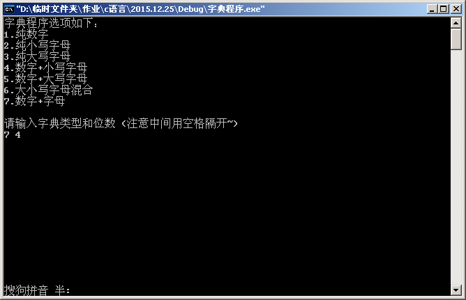</p>
<p>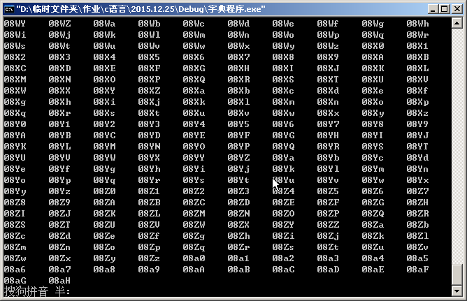</p>

    
  </div>

</article>


   

   
  <div class="box-prev-next clearfix">
    <a class="hide pull-left" href="/">
        <i class="icon icon-angle-left"></i>
    </a>
    <a class="show pull-right" href="/2017/03/30/电子线路实验上机作业/">
        <i class="icon icon-angle-right"></i>
    </a>
  </div>


</div>


  <a id="backTop" class="back-top">
    <i class="icon-angle-up"></i>
  </a>


  <div class="modal" id="modal">
  <span id="cover" class="cover hide"></span>
  <div id="modal-dialog" class="modal-dialog hide-dialog">
    <div class="modal-header">
      <span id="close" class="btn-close">关闭</span>
    </div>
    <hr>
    <div class="modal-body">
      <ul class="list-toolbox">
        
          <li class="item-toolbox">
            <a
              class="CIRCLE"
              href="/archives/"
              rel="noopener noreferrer"
              target="_self"
              >
              文章
            </a>
          </li>
        
          <li class="item-toolbox">
            <a
              class="CIRCLE"
              href="/category/"
              rel="noopener noreferrer"
              target="_self"
              >
              分类
            </a>
          </li>
        
          <li class="item-toolbox">
            <a
              class="CIRCLE"
              href="/tag/"
              rel="noopener noreferrer"
              target="_self"
              >
              标签
            </a>
          </li>
        
          <li class="item-toolbox">
            <a
              class="CIRCLE"
              href="/link/"
              rel="noopener noreferrer"
              target="_self"
              >
              友链
            </a>
          </li>
        
          <li class="item-toolbox">
            <a
              class="CIRCLE"
              href="/about/"
              rel="noopener noreferrer"
              target="_self"
              >
              关于我
            </a>
          </li>
        
          <li class="item-toolbox">
            <a
              class="CIRCLE"
              href="/search/"
              rel="noopener noreferrer"
              target="_self"
              >
              搜索
            </a>
          </li>
        
      </ul>

    </div>
  </div>
</div>


  
      <div class="fexo-comments comments-post">
    

    

    
    

    

    
    

    

  </div>

  

  <script type="text/javascript">
  function loadScript(url, callback) {
    var script = document.createElement('script')
    script.type = 'text/javascript';

    if (script.readyState) { //IE
      script.onreadystatechange = function() {
        if (script.readyState == 'loaded' ||
          script.readyState == 'complete') {
          script.onreadystatechange = null;
          callback();
        }
      };
    } else { //Others
      script.onload = function() {
        callback();
      };
    }

    script.src = url;
    document.getElementsByTagName('head')[0].appendChild(script);
  }

  window.onload = function() {
    loadScript('/js/bundle.js?235683', function() {
      // load success
    });
  }
</script>

</body>
</html>
